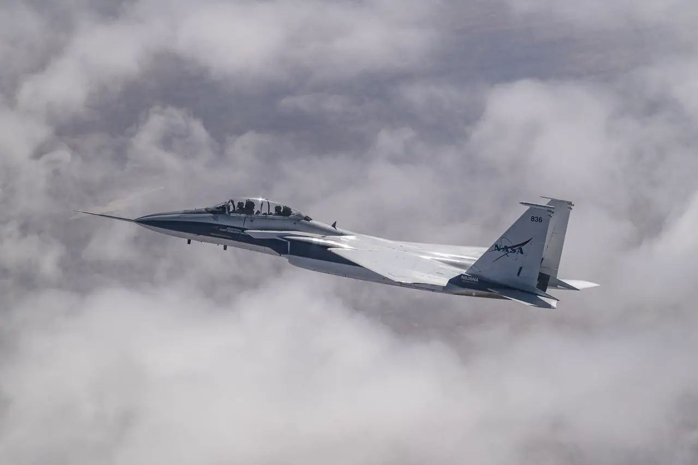

مقدمة في هندسة الطيران والفضاء
كيف تُصمَّم الطائرات والمركبات الفضائية وتُبنى وتُطيَّر: الغلاف الجوي، والرفع والسحب، والأداء، والاستقرار، والدفع، والصواريخ والمدارات، والطريق نحو طيران أنظف.
- حقائق فُحصت مقابل ناسا غلين، وMIT OpenCourseWare، وLeishman، ودليل FAA
- المؤسس والمؤسِّسة المشاركة راجعا
- آخر مراجعة:
المتطلبات السابقة: الجبر، وحساب المثلثات، وميكانيكا الفيزياء I؛ يُستحسَن حساب التفاضل والتكامل I.
للمعلمين
يمكنك تدريس هذا المقرر، أو أن يتابعه الطالب وحده. إنه مجاني. Saving Planets لا تمنح درجة ولا ساعات معتمدة.
- هذه الصفحة هي المقرر كاملًا: 10 وحدات و4 مختبرات (AERO 101).
- خطّط لخمسة عشر أسبوعًا، نحو 6 إلى 9 ساعات في الأسبوع، بما في ذلك أسابيع المختبر.
- اتبع جدول الخمسة عشر أسبوعًا. اقرأ الوحدة، حلّ التمارين على الورق، ثم افتح الإجابة. في أسبوع المختبر، نفّذ المختبر أو نسخته المنزلية.
- التحقق هو رقم أو نتيجة برمجية في الصفحة يعيد سكربت حسابها قبل النشر. يجب أن يطابق الرقم الظاهر الرقم المعاد حسابه.
- استخدم طباعة هذه الصفحة، أو نزّل دليل الدراسة PDF. ورقة القوانين قرب النهاية.
- اسأل: كيف تساعد هذه الوحدة الناس والكوكب؟ في كل وحدة مربع أخضر فيه حقيقة مع مصدرها.
- انسخ نموذج دليل المعلم واكتب اسم صفك والوقت المتاح والأسئلة التي ستطرحها. افتح نموذج دليل المعلم
نواتج التعلّم
تدريب واختبار قصير في هذه الوحدة. مجموعات الامتحان في نهاية المقرر.
| الناتج | يُدرَّس في |
|---|---|
| عرض أبرز محطات الطيران ورحلات الفضاء. | الوحدة 1 |
| وصف دورة التصميم: المتطلبات، والمفهوم، والتصميم الأولي والتفصيلي، والاختبار. | الوحدة 1 |
| شرح دراسات الموازنة ولماذا يتحكم الوزن في كل شيء. | الوحدة 1 |
| تسمية قوى الطيران الأربع. | الوحدة 1 |
| استخدام نموذج الغلاف الجوي القياسي لإيجاد T وp وρ عند الارتفاع. | الوحدة 2 |
| تطبيق قانون الغاز المثالي على الهواء. | الوحدة 2 |
| حساب سرعة الصوت وعدد ماخ. | الوحدة 2 |
| شرح سبب طيران طائرات الركاب في رحلاتها قرب 11 km. | الوحدة 2 |
| شرح الرفع بوصفه نتيجة لتغيير اتجاه التدفق، مع فروق ضغط تصفها معادلة برنولي. | الوحدة 3 |
| استخدام معادلتي الرفع والسحب. | الوحدة 3 |
| حساب الضغط الديناميكي وسرعة الانهيار وعدد رينولدز. | الوحدة 3 |
| التمييز بين سحب الاحتكاك وسحب الضغط والسحب المستحث. | الوحدة 3 |
| تسمية عناصر هندسة المقطع الانسيابي: الوتر، والتحدب، والسماكة، وزاوية الهجوم. | الوحدة 4 |
| استخدام نظرية المقطع الرقيق: c_l ≈ 2πα. | الوحدة 4 |
| تصحيح ميل منحنى الرفع لجناح محدود نسبة باعه AR. | الوحدة 4 |
| استخدام قطبية السحب C_D = C_D0 + C_L²/(πeAR) لإيجاد أفضل نسبة رفع إلى سحب. | الوحدة 4 |
| ربط نسبة الانزلاق بـ L/D. | الوحدة 5 |
| إيجاد الدفع والقدرة المطلوبين في الطيران الأفقي. | الوحدة 5 |
| حساب معدل الصعود من القدرة الفائضة. | الوحدة 5 |
| استخدام معادلة بريغيه للمدى. | الوحدة 5 |
| تسمية المحاور الثلاثة، الانحدار والدحرجة والانعراج، وأسطح التحكم الخاصة بها. | الوحدة 6 |
| شرح الاستقرار الساكن والديناميكي. | الوحدة 6 |
| تحديد موضع مركز الثقل والنقطة المحايدة؛ وحساب الهامش الساكن. | الوحدة 6 |
| شرح سبب تثبيت الذيل للطائرة. | الوحدة 6 |
| استخدام معادلة الدفع بكمية الحركة. | الوحدة 7 |
| حساب كفاءة الدفع. | الوحدة 7 |
| المقارنة بين المحركات النفاثة التوربينية والمراوح التوربينية والمراوح الدافعة. | الوحدة 7 |
| تعريف الدفع النوعي واستهلاك الوقود النوعي للدفع. | الوحدة 7 |
| استخدم Δv = I_sp g₀ ln(m₀/m_f). | الوحدة 8 |
| حساب نسب الكتلة المطلوبة. | الوحدة 8 |
| شرح سبب نجاح تقسيم الصاروخ إلى مراحل. | الوحدة 8 |
| حساب نسبة الدفع إلى الوزن للصاروخ. | الوحدة 8 |
| حساب السرعة والدور في مدار دائري. | الوحدة 9 |
| إيجاد نصف قطر المدار الثابت بالنسبة للأرض. | الوحدة 9 |
| حساب Δv لانتقال هوهمان وزمن الانتقال. | الوحدة 9 |
| وصف المدارات الأرضية الشائعة واستخداماتها. | الوحدة 9 |
| حساب CO₂ الناتج عن الوقود المحروق. | الوحدة 10 |
| استخدام معادلة بريغيه لمقارنة تحسينات الكفاءة. | الوحدة 10 |
| شرح أدوار وحدود وقود الطيران المستدام والبطاريات والهيدروجين. | الوحدة 10 |
| وصف استدامة الفضاء: الحطام والتخلص من المركبات. | الوحدة 10 |
المواءمة مع المعايير
تربط هذه الصفوف نواتج تعلم هذا المقرر بأجزاء من نواتج الطلبة في المعيار 3 لدى لجنة الاعتماد الهندسي في ABET لدورة 2025–2026. وتقول الصف «يقابل» فقط حيث يدرّس هذا المقرر ذلك الجزء فعلًا. وهذا لا يعني اعتمادًا ولا ساعات معتمدة ولا تبنّيًا من ABET.
| ناتج ABET | أين يقابل هذا المقرر |
|---|---|
| 1. an ability to identify, formulate, and solve complex engineering problems by applying principles of engineering, science, and mathematics. | يقابل جزئيًا. تطبق الوحدات من 2 إلى 8 الهندسة والعلوم والرياضيات على مسائل تمهيدية في الغلاف الجوي والرفع والسحب والأداء والدفع والصواريخ والمدارات. وهذه ليست كامل مدى مسائل الهندسة المعقدة في تعريف ABET. |
| 2. an ability to apply engineering design to produce solutions that meet specified needs with consideration of public health, safety, and welfare, as well as global, cultural, social, environmental, and economic factors. | يقابل جزئيًا. تدرّس الوحدة 1 المتطلبات ودورة التصميم ودراسات المفاضلة. وتقارن الوحدة 9 الكلفة البيئية للطيران. وتتضمن المختبرات ملاحظة سلامة. ولا يدرّس المقرر عوامل الصحة العامة والعوامل الثقافية والاجتماعية والاقتصادية في هذا الناتج. |
| 4. an ability to recognize ethical and professional responsibilities in engineering situations and make informed judgments, which must consider the impact of engineering solutions in global, economic, environmental, and societal contexts. | يقابل جزئيًا. تتناول الوحدة 9 الأثر البيئي والمجتمعي لانبعاثات الطيران والحطام المداري. ولا يدرّس المقرر أخلاقيات المهنة ولا طريقة للحكم الأخلاقي. |
| 6. an ability to develop and conduct appropriate experimentation, analyze and interpret data, and use engineering judgment to draw conclusions. | يقابل جزئيًا. تطلب المختبرات الأربعة إجراء اختبار أو نموذج، وتسجيل الأرقام، وشرح النتيجة: نفق رياح افتراضي، وورقة معادلة الصاروخ، وطائرة شراعية تبنيها وتطيرها، وجدول غلاف جوي. |
النواتج 3 و5 و7 غير مربوطة. هذا المقرر لا يدرّس التواصل مع جمهور متنوع، ولا العمل ضمن فريق، ولا طريقة لاكتساب معرفة جديدة.
المصدر: ABET Engineering Accreditation Commission, Criterion 3 (2025–2026).
قراءات
الكتاب المقرر
Introduction to Aerospace Flight Vehicles. J. Gordon Leishman. Embry-Riddle Aeronautical University. October 2027 Release. © 2022–2026. الترخيص: CC BY-NC-ND 4.0. كتاب مفتوح مجاني.
اختياري، إن كان لديك وصول: John D. Anderson Jr. و Mary L. Bowden, Introduction to Flight, 9th edition (McGraw-Hill, 2022).
كل رابط مصدر عام مجاني مستخدم أصلًا في هذا المقرر. ذكر المصدر ليس تزكية.
الوحدات
تاريخ الطيران وعملية التصميم
الوحدة 1
الفصول
الأوقات هي عناوين الفصول في تفريغ يوتيوب. العناوين غير الإنجليزية ترجمة SI.
استشهد بهذا الفيديو
استشهاد الفيلم الإنجليزي.
APA
NASA Connect. (2007, August 18). The Wright Brothers [Video]. YouTube. https://www.youtube.com/watch?v=L_mJxmO7_8A
MLA
"The Wright Brothers." YouTube, uploaded by NASAconnect, 18 Aug. 2007, https://www.youtube.com/watch?v=L_mJxmO7_8A.
شاهد وتعلّم 2

استشهد بهذا الفيديو
تاريخ النشر غير موجود في بيانات المصدر، لذا تستخدم الإحالة n.d.
APA
TU Delft, Introduction to Aeronautical Engineering. (n.d.). History of Flight [Video]. YouTube. https://www.youtube.com/watch?v=j0SaIXktsQg
MLA
"History of Flight." YouTube, uploaded by TU Delft, Introduction to Aeronautical Engineering, n.d., https://www.youtube.com/watch?v=j0SaIXktsQg.
تعذّر جلب تفريغ موقوت لهذا الفيلم، لذا حُذف التفريغ وقائمة الترجمة والفصول.
للتعمّق
History of Flight (باللغة الإنجليزية)
محاضرة جامعة دلفت للتكنولوجيا عن تاريخ الطيران، من الأفكار الأولى إلى الطائرة الحديثة.
15:00 · TU Delft, Introduction to Aeronautical Engineering. الترخيص: CC BY-NC-SA 4.0. الرابط للدراسة المجانية فقط؛ Saving Planets غير تابع لهذه الجامعة ولا يحظى بتأييدها.
استشهد بهذا الفيديو
تاريخ النشر غير موجود في بيانات المصدر، لذا تستخدم الإحالة n.d.
APA
MIT 16.885J Aircraft Systems Engineering (Fall 2005), MIT OpenCourseWare. (n.d.). Lecture 19: Design Process as it Relates to the Shuttle [Video]. YouTube. https://ocw.mit.edu/courses/16-885j-aircraft-systems-engineering-fall-2005/resources/lecture-19/
MLA
"Lecture 19: Design Process as it Relates to the Shuttle." YouTube, uploaded by MIT 16.885J Aircraft Systems Engineering (Fall 2005), MIT OpenCourseWare, n.d., https://ocw.mit.edu/courses/16-885j-aircraft-systems-engineering-fall-2005/resources/lecture-19/.
تعذّر جلب تفريغ موقوت لهذا الفيلم، لذا حُذف التفريغ وقائمة الترجمة والفصول.
مستوى متقدم
Lecture 19: Design Process as it Relates to the Shuttle (باللغة الإنجليزية)
محاضرة دراسات عليا عن كيف شكّلت عملية التصميم مكوك الفضاء.
1:49:43 · MIT 16.885J Aircraft Systems Engineering (Fall 2005), MIT OpenCourseWare. الترخيص: CC BY-NC-SA 4.0 · شروط الاستخدام. الرابط للدراسة المجانية فقط؛ Saving Planets غير تابع لهذه الجامعة ولا يحظى بتأييدها.
أهداف التعلّم
في نهاية هذه الوحدة ستستطيع أن:
- عرض أبرز محطات الطيران ورحلات الفضاء.
- وصف دورة التصميم: المتطلبات، والمفهوم، والتصميم الأولي والتفصيلي، والاختبار.
- شرح دراسات الموازنة ولماذا يتحكم الوزن في كل شيء.
- تسمية قوى الطيران الأربع.
المفاهيم الأساسية
- في 17 ديسمبر 1903، قامت طائرة Wright Flyer برحلة مدتها 12 ثانية قطعت 36 m (120 ft)؛ وقطعت أفضل رحلة في ذلك اليوم 260 m (852 ft) في 59 ثانية. نجح الأخوان رايت بالاختبار: بنيا طائرات شراعية ونفق رياح خاصًا بهما قبل إضافة محرك.
- كل تصميم يبدأ بمهمة: الحمولة، والمدى أو المدار، والتكلفة، والسلامة. وتحوّل المتطلبات المهمة إلى أرقام يجب أن يحققها التصميم.
- التصميم تكراري: رسم المفهوم، وتحديد الأبعاد، والتحليل، والاختبار، وإعادة التصميم. وتقارن دراسة الموازنة بين الخيارات وفق معايير مرجحة.
- تؤثر أربع قوى في الطائرة: الرفع، والوزن، والدفع، والسحب. في الطيران الأفقي المستقر، الرفع = الوزن والدفع = السحب.
- الوزن يتراكم: الهيكل الإضافي يحتاج إلى رفع أكبر، وجناح أكبر، وسحب أكبر، ووقود أكثر، ثم وزن أكبر مرة أخرى.

صورة: NASA/Steve Freeman. طائرة F-15B البحثية التابعة لناسا فوق إدواردز في كاليفورنيا، في 6 أغسطس 2024 عمل لحكومة الولايات المتحدة.
الرفع إلى الأعلى من الجناحين عند مركز الضغط. الوزن إلى الأسفل عند مركز الثقل. الدفع إلى الأمام من المحركات. السحب إلى الخلف على هيكل الطائرة، عكس اتجاه الطيران.
صُنع بمساعدة SI
المعادلات الأساسية
L=W, T=D
W=mg
Score=_i w_i s_i
أمثلة محلولة خطوة بخطوة
مثال 1.1 طائرة خفيفة كتلتها 1100 kg تطير في رحلة أفقية. ما الرفع الذي يجب أن ينتجه جناحها؟
اعرض الخطوات
- الطيران الأفقي: L = W = mg.
- L = 1,100 × 9.81.
الإجابة: 10,791 N ≈ 10.8 kN.
مثال 1.2 يُقيَّم مفهومان للجناح من 10 في التكلفة (الوزن 0.3) والكفاءة (0.5) وسهولة البناء (0.2). يحصل المفهوم A على 8 و6 و9، ويحصل B على 5 و9 و6. أيهما يفوز؟
اعرض الخطوات
- A: 0.3(8) + 0.5(6) + 0.2(9) = 7.2.
- B: 0.3(5) + 0.5(9) + 0.2(6) = 7.2.
الإجابة: تعادل عند 7.2: على الفريق أن يختبر الاثنين أو يراجع الأوزان التي يثق بها أقل.
مثال 1.3 قطعت الرحلة الأولى لطائرة Wright Flyer مسافة 36 m في 12 s. ما متوسط سرعتها بالنسبة للأرض؟
اعرض الخطوات
- v = 36/12.
الإجابة: 3 m/s بالنسبة للأرض. كانت تطير عكس رياح أمامية قوية، لذا كانت سرعتها الجوية أعلى بكثير.
تمارين
حلّ كلًّا منها على الورق أولًا، ثم تحقق.
طائرة ركاب كتلتها 70000 kg تطير في رحلة أفقية. أوجد قوة الرفع.
اعرض الإجابة
L = 70,000 × 9.81 = 686,700 N ≈ 687 kN.
في الرحلة الأفقية تعطي محركات الطائرة دفعًا قدره 30 kN. ما قوة السحب؟
اعرض الإجابة
30 kN، لأن الدفع يوازن السحب في الطيران المستقر.
لماذا بنى الأخوان رايت نفق رياح؟
اعرض الإجابة
كانت بيانات الرفع المنشورة غير موثوقة، فقاسا بنفسيهما أشكالًا كثيرة للأجنحة: الاختبار قبل البناء هو جوهر عملية التصميم.
مفاهيم خاطئة شائعة
خرافة: يصمم المهندسون الطائرة أولًا ثم يبحثون لها عن مهمة.
في الحقيقة: المهمة ومتطلباتها تأتي أولًا.
خرافة: في الطيران الأفقي يجب أن يوازن الدفع الوزن.
في الحقيقة: الدفع يوازن السحب؛ والرفع يوازن الوزن.
خرافة: توفير قليل من الوزن لا يوفر إلا ذلك الوزن.
في الحقيقة: توفير الوزن يتضاعف عبر حجم الجناح والسحب والوقود.
بطاقات تعليمية
القوى الأربع
صورة: NASA/Steve Freeman. طائرة F-15B البحثية التابعة لناسا فوق إدواردز في كاليفورنيا، في 6 أغسطس 2024 عمل لحكومة الولايات المتحدة.
الرفع، والوزن، والدفع، والسحب.
20 بطاقات · نحو 8 دقائق
اختبار ذاتي
20 أسئلة · نحو 15 دقائق
كيف يساعد هذا في إنقاذ الكوكب
تتغير أولويات التصميم بتغير الزمن. فمتطلبات الطائرات الجديدة تشمل الآن استهلاك الوقود والانبعاثات، لذا فإن أدوات دراسة الموازنة نفسها تزن المناخ إلى جانب التكلفة والأداء.
تذكر ناسا ثلاث طرق رئيسية لجعل الطيران مستدامًا: تقنيات طائرات عالية الكفاءة، ووقود الطيران المستدام، وعمليات وبنية تحتية أفضل.
على Saving Planets: Artemis II
المصادر: Smithsonian: طائرة Wright Flyer لعام 1903 · ناسا: الطيران المستدام
للتعمّق
- Smithsonian: طائرة Wright Flyer لعام 1903: قصة طائرة Wright Flyer ومواصفاتها.
- NASA Glenn: Beginner’s Guide to Aeronautics: ابدأ من هنا في كل موضوع.
الغلاف الجوي
الوحدة 2
استشهد بهذا الفيديو
تاريخ النشر غير موجود في بيانات المصدر، لذا تستخدم الإحالة n.d.
APA
NASA. (n.d.). NASA Now: Earth’s Atmosphere: Earth Science Week [Video]. YouTube. https://www.youtube.com/watch?v=vLh4Zb0dgOE
MLA
"NASA Now: Earth’s Atmosphere: Earth Science Week." YouTube, uploaded by NASA, n.d., https://www.youtube.com/watch?v=vLh4Zb0dgOE.
تعذّر جلب تفريغ موقوت لهذا الفيلم، لذا حُذف التفريغ وقائمة الترجمة والفصول.
ابدأ من هنا
NASA Now: Earth’s Atmosphere: Earth Science Week (باللغة الإنجليزية)
عالم من ناسا يشرح طبقات الغلاف الجوي وممّ يتكون الهواء.
6:41 · NASA. الترخيص: إرشادات ناسا للصور والوسائط (عمل لحكومة الولايات المتحدة). الرابط للدراسة المجانية فقط؛ Saving Planets غير تابع لناسا ولا يحظى بتأييدها.
شاهد وتعلّم 1

استشهد بهذا الفيديو
تاريخ النشر غير موجود في بيانات المصدر، لذا تستخدم الإحالة n.d.
APA
TU Delft, Introduction to Aeronautical Engineering. (n.d.). The ISA, Part I [Video]. YouTube. https://www.youtube.com/watch?v=Hdix6qj9qs8
MLA
"The ISA, Part I." YouTube, uploaded by TU Delft, Introduction to Aeronautical Engineering, n.d., https://www.youtube.com/watch?v=Hdix6qj9qs8.
تعذّر جلب تفريغ موقوت لهذا الفيلم، لذا حُذف التفريغ وقائمة الترجمة والفصول.
للتعمّق
The ISA, Part I (باللغة الإنجليزية)
الجزء الأول من محاضرة جامعة دلفت للتكنولوجيا عن الغلاف الجوي القياسي الدولي.
17:00 · TU Delft, Introduction to Aeronautical Engineering. الترخيص: CC BY-NC-SA 4.0. الرابط للدراسة المجانية فقط؛ Saving Planets غير تابع لهذه الجامعة ولا يحظى بتأييدها.
أهداف التعلّم
في نهاية هذه الوحدة ستستطيع أن:
- استخدام نموذج الغلاف الجوي القياسي لإيجاد T وp وρ عند الارتفاع.
- تطبيق قانون الغاز المثالي على الهواء.
- حساب سرعة الصوت وعدد ماخ.
- شرح سبب طيران طائرات الركاب في رحلاتها قرب 11 km.
المفاهيم الأساسية
- الغلاف الجوي القياسي نموذج متوسط مطابق للقياسات. في نموذج ناسا تمتد طبقة التروبوسفير من الأرض حتى 11000 m، وتنخفض درجة الحرارة نحو 6.5 °C لكل كيلومتر.
- من 11 إلى 25 km (الستراتوسفير السفلى) تكون درجة حرارة النموذج ثابتة عند −56.46 °C، بينما يستمر الضغط في الانخفاض أسيًا.
- تنتج الكثافة من قانون الغاز المثالي، ρ = p/(RT). عند 11 km تبلغ كثافة الهواء نحو 30% من كثافته عند مستوى سطح البحر.
- سرعة الصوت a = √(γRT)، لذا فهي تعتمد على درجة الحرارة فقط. عدد ماخ M = V/a.
- الهواء الأقل كثافة يعني سحبًا أقل عند سرعة معينة، ولهذا تطير النفاثات عاليًا، لكن الأجنحة والمحركات ما زالت تحتاج إلى ما يكفي من الهواء لتعمل.
المعادلات الأساسية
T=15.04-0.00649 h (^, h in m)
p=101.29((T+273.1)/(288.08))^5.256 kPa
ρ=(p)/(0.2869 (T+273.1))
a=γ RT, M= Va
أمثلة محلولة خطوة بخطوة
مثال 2.1 أوجد T وp وρ عند 5000 m بنموذج ناسا.
اعرض الخطوات
- T = 15.04 − 0.00649 × 5,000 = −17.41 °C.
- p = 101.29 × (255.69/288.08)^5.256 = 54.11 kPa.
- ρ = 54.11/(0.2869 × 255.69).
الإجابة: T ≈ −17.4 °C، p ≈ 54.1 kPa، ρ ≈ 0.738 kg/m³ (60% من مستوى سطح البحر).
مثال 2.2 أوجد سرعة الصوت عند مستوى سطح البحر (15 °C) وعند 11 km (−56.5 °C).
اعرض الخطوات
- a = √(1.4 × 287 × 288.15) = 340.3 m/s.
- a = √(1.4 × 287 × 216.65) = 295.0 m/s.
الإجابة: 340 m/s و295 m/s.
مثال 2.3 طائرة ركاب تطير بسرعة جوية حقيقية 230 m/s عند 11 km. ما عدد ماخ؟
اعرض الخطوات
- M = 230/295.0.
الإجابة: M ≈ 0.78.
تمارين
حلّ كلًّا منها على الورق أولًا، ثم تحقق.
أوجد كثافة الهواء عند 11000 m بنموذج ناسا (T = −56.46 °C، p = 22.72 kPa).
اعرض الإجابة
ρ = 22.72/(0.2869 × 216.64) ≈ 0.366 kg/m³، أي نحو 30% من مستوى سطح البحر.
أوجد درجة الحرارة عند 1500 m في نموذج ناسا.
اعرض الإجابة
T = 15.04 − 9.74 = 5.3 °C.
كم يساوي ماخ 2 عند مستوى سطح البحر بوحدة m/s؟
اعرض الإجابة
2 × 340 = 680 m/s.
أوجد كثافة مستوى سطح البحر من p = 101.40 kPa وT = 15.04 °C.
اعرض الإجابة
ρ = 101.40/(0.2869 × 288.14) ≈ 1.227 kg/m³.
مفاهيم خاطئة شائعة
خرافة: تعتمد سرعة الصوت على الضغط.
في الحقيقة: في الغاز المثالي تعتمد على درجة الحرارة فقط.
خرافة: يزداد البرد طوال الطريق إلى الأعلى.
في الحقيقة: تستقر درجة الحرارة فوق 11 km ثم ترتفع مجددًا في أعالي الستراتوسفير.
خرافة: الهواء الأقل كثافة يساعد دائمًا.
في الحقيقة: إنه يقلل السحب لكنه يقلل أيضًا الرفع ودفع المحرك، لذا يجب أن تطير الأجنحة أسرع أو بمعاملات رفع أعلى.
بطاقات تعليمية
21 بطاقات · نحو 8 دقائق
اختبار ذاتي
20 أسئلة · نحو 15 دقائق
كيف يساعد هذا في إنقاذ الكوكب
تطير الطائرات حيث يحدث الطقس والمناخ. تدرس ناسا انبعاثات الطائرات عبر النمذجة الحاسوبية واختبارات الاحتراق المخبرية واختبارات الطيران، لأن ما تطلقه المحركات على الارتفاعات العالية يهم الغلاف الجوي.
الفيزياء الجوية نفسها هي ما يسمح للأقمار الصناعية بتحويل الإشعاع الذي تقيسه إلى مقاطع لدرجة حرارة الهواء.
على Saving Planets: السحب الجوي
المصادر: NASA Glenn: Earth atmosphere model (metric) · ناسا: الطيران المستدام
للتعمّق
- NASA Glenn: Earth atmosphere model (metric): النموذج والمعادلات المستخدمة في هذه الوحدة.
- FAA Pilot’s Handbook of Aeronautical Knowledge: فصول مجانية من دليل FAA عن الغلاف الجوي والديناميكا الهوائية.
أساسيات الديناميكا الهوائية: الرفع والسحب
الوحدة 3

استشهد بهذا الفيديو
تاريخ النشر غير موجود في بيانات المصدر، لذا تستخدم الإحالة n.d.
APA
TU Delft, Introduction to Aeronautical Engineering. (n.d.). Lift [Video]. YouTube. https://www.youtube.com/watch?v=JPD0Be4eSos
MLA
"Lift." YouTube, uploaded by TU Delft, Introduction to Aeronautical Engineering, n.d., https://www.youtube.com/watch?v=JPD0Be4eSos.
تعذّر جلب تفريغ موقوت لهذا الفيلم، لذا حُذف التفريغ وقائمة الترجمة والفصول.
ابدأ من هنا
Lift (باللغة الإنجليزية)
كيف يولّد الجناح الرفع، في مقدمة هندسة الطيران من جامعة دلفت للتكنولوجيا.
12:25 · TU Delft, Introduction to Aeronautical Engineering. الترخيص: CC BY-NC-SA 4.0. الرابط للدراسة المجانية فقط؛ Saving Planets غير تابع لهذه الجامعة ولا يحظى بتأييدها.
شاهد وتعلّم 2
استشهد بهذا الفيديو
تاريخ النشر غير موجود في بيانات المصدر، لذا تستخدم الإحالة n.d.
APA
MIT 16.687 Private Pilot Ground School (IAP 2019), MIT OpenCourseWare. (n.d.). Lecture 2: Airplane Aerodynamics [Video]. YouTube. https://ocw.mit.edu/courses/16-687-private-pilot-ground-school-january-iap-2019/resources/lecture-2-airplane-aerodynamics/
MLA
"Lecture 2: Airplane Aerodynamics." YouTube, uploaded by MIT 16.687 Private Pilot Ground School (IAP 2019), MIT OpenCourseWare, n.d., https://ocw.mit.edu/courses/16-687-private-pilot-ground-school-january-iap-2019/resources/lecture-2-airplane-aerodynamics/.
تعذّر جلب تفريغ موقوت لهذا الفيلم، لذا حُذف التفريغ وقائمة الترجمة والفصول.
للتعمّق
Lecture 2: Airplane Aerodynamics (باللغة الإنجليزية)
محاضرة المدرسة الأرضية عن الرفع والسحب وكيف يُتحكم في الجناح.
1:12:07 · MIT 16.687 Private Pilot Ground School (IAP 2019), MIT OpenCourseWare. الترخيص: CC BY-NC-SA 4.0 · شروط الاستخدام. الرابط للدراسة المجانية فقط؛ Saving Planets غير تابع لهذه الجامعة ولا يحظى بتأييدها.
استشهد بهذا الفيديو
تاريخ النشر غير موجود في بيانات المصدر، لذا تستخدم الإحالة n.d.
APA
MIT 16.885J Aircraft Systems Engineering (Fall 2005), MIT OpenCourseWare. (n.d.). Lecture 7: Aerodynamics (From Subsonic to Hypersonic and Back) [Video]. YouTube. https://ocw.mit.edu/courses/16-885j-aircraft-systems-engineering-fall-2005/resources/lecture-7/
MLA
"Lecture 7: Aerodynamics (From Subsonic to Hypersonic and Back)." YouTube, uploaded by MIT 16.885J Aircraft Systems Engineering (Fall 2005), MIT OpenCourseWare, n.d., https://ocw.mit.edu/courses/16-885j-aircraft-systems-engineering-fall-2005/resources/lecture-7/.
تعذّر جلب تفريغ موقوت لهذا الفيلم، لذا حُذف التفريغ وقائمة الترجمة والفصول.
مستوى متقدم
Lecture 7: Aerodynamics (From Subsonic to Hypersonic and Back) (باللغة الإنجليزية)
محاضرة دراسات عليا في الديناميكا الهوائية من الطيران دون الصوتي إلى فوق الصوتي ثم العودة.
1:50:38 · MIT 16.885J Aircraft Systems Engineering (Fall 2005), MIT OpenCourseWare. الترخيص: CC BY-NC-SA 4.0 · شروط الاستخدام. الرابط للدراسة المجانية فقط؛ Saving Planets غير تابع لهذه الجامعة ولا يحظى بتأييدها.
أهداف التعلّم
في نهاية هذه الوحدة ستستطيع أن:
- شرح الرفع بوصفه نتيجة لتغيير اتجاه التدفق، مع فروق ضغط تصفها معادلة برنولي.
- استخدام معادلتي الرفع والسحب.
- حساب الضغط الديناميكي وسرعة الانهيار وعدد رينولدز.
- التمييز بين سحب الاحتكاك وسحب الضغط والسحب المستحث.
المفاهيم الأساسية
- يحرف الجناح تيار الهواء إلى الأسفل؛ وبحسب قانون نيوتن الثالث يدفع الهواء الجناح إلى الأعلى. وبالمثل، التدفق الأسرع فوق السطح العلوي يعني ضغطًا أقل هناك (برنولي). كلاهما يصف تدفقًا واحدًا.
- الضغط الديناميكي q = ½ρV² يحدد مقياس كل قوة ديناميكية هوائية. ويعبّر معاملا الرفع والسحب C_L وC_D عن الشكل وزاوية الهجوم.
- يزداد الرفع مع V²، لذا فإن تنصيف السرعة يتطلب أربعة أضعاف معامل الرفع أو مساحة الجناح.
- ينشأ السحب من احتكاك السطح، وسحب الضغط (الشكل)، والسحب المستحث، وهو ثمن توليد الرفع بجناح محدود.
- عدد رينولدز Re = ρVc/μ يقارن بين تأثيرات القصور الذاتي واللزوجة؛ ويجب أن تأخذه نماذج نفق الرياح في الحسبان للتنبؤ بالسلوك بالحجم الكامل.
المعادلات الأساسية
L=12ρ V^2SC_L
D=12ρ V^2SC_D
p+12ρ V^2=const
Re=(ρ Vc)/(μ)
أمثلة محلولة خطوة بخطوة
مثال 3.1 طائرة كتلتها 1100 kg وجناحها 16.2 m² تطير أفقيًا بسرعة 55 m/s عند مستوى سطح البحر (ρ = 1.227 kg/m³). أوجد C_L.
اعرض الخطوات
- L = W = 10,791 N.
- q = ½ × 1.227 × 55² = 1,855 Pa.
- C_L = 10,791/(1,855 × 16.2).
الإجابة: C_L ≈ 0.36.
مثال 3.2 مع C_L,max = 1.6، أوجد سرعة انهيار هذه الطائرة عند مستوى سطح البحر.
اعرض الخطوات
- V_s = √(2W/(ρSC_L,max)).
- = √(2 × 10,791/(1.227 × 16.2 × 1.6)).
الإجابة: V_s ≈ 26.1 m/s (نحو 51 عقدة).
مثال 3.3 أوجد عدد رينولدز لوتر طوله 1.5 m عند 55 m/s عند مستوى سطح البحر (μ = 1.789 × 10⁻⁵ kg/(m·s)).
اعرض الخطوات
- Re = 1.227 × 55 × 1.5/(1.789 × 10⁻⁵).
الإجابة: Re ≈ 5.7 مليون.
تمارين
حلّ كلًّا منها على الورق أولًا، ثم تحقق.
إذا تضاعفت السرعة مع C_L نفسه، كيف يتغير الرفع؟
اعرض الإجابة
الرفع ∝ V²، لذا يتضاعف أربع مرات.
أوجد الضغط الديناميكي عند 230 m/s على ارتفاع 11 km (ρ = 0.366 kg/m³).
اعرض الإجابة
q = ½ × 0.366 × 230² ≈ 9,680 Pa.
أوجد سحب طائرة المثال 3.1 إذا كان C_D = 0.032.
اعرض الإجابة
D = 1,855 × 16.2 × 0.032 ≈ 962 N.
بكم تزيد سرعة الانهيار عند 1500 m (ρ = 1.060 kg/m³) عنها عند مستوى سطح البحر؟
اعرض الإجابة
V_s ∝ 1/√ρ: √(1.227/1.060) = 1.076، أي أعلى بنحو 7.6% (≈ 28.0 m/s سرعة جوية حقيقية).
مفاهيم خاطئة شائعة
خرافة: يجب أن يلتقي الهواء المار فوق الجناح بالهواء المار تحته عند الحافة الخلفية (زمن عبور متساوٍ).
في الحقيقة: هذا غير صحيح؛ فالتدفق العلوي يصل أولًا في الواقع. وتصنف NASA Glenn زمن العبور المتساوي ضمن النظريات الخاطئة للرفع.
خرافة: الرفع هو برنولي فقط، أو نيوتن فقط.
في الحقيقة: كلاهما يصف التدفق نفسه؛ ففروق الضغط وانحراف التدفق متلازمان.
خرافة: السحب مجرد احتكاك بالهواء.
في الحقيقة: سحب الضغط والسحب المستحث غالبًا أكبر.
بطاقات تعليمية
الرفع
صورة: NASA/Steve Freeman. طائرة F-15B البحثية التابعة لناسا فوق إدواردز في كاليفورنيا، في 6 أغسطس 2024 عمل لحكومة الولايات المتحدة.
معظم الرفع يأتي من الجناحين. وهو عمودي على اتجاه الطيران ويمر بمركز الضغط. المصدر: دليل ناسا غلين للمبتدئين في علم الطيران.
الوزن
صورة: NASA/Steve Freeman. طائرة F-15B البحثية التابعة لناسا فوق إدواردز في كاليفورنيا، في 6 أغسطس 2024 عمل لحكومة الولايات المتحدة.
الوزن موجّه نحو مركز الأرض ويمر بمركز الثقل. المصدر: دليل ناسا غلين للمبتدئين في علم الطيران.
الدفع
صورة: NASA/Steve Freeman. طائرة F-15B البحثية التابعة لناسا فوق إدواردز في كاليفورنيا، في 6 أغسطس 2024 عمل لحكومة الولايات المتحدة.
دفع المحركات يعمل إلى الأمام على امتداد الجسم. العادم يخرج إلى الخلف، والقوة على الطائرة إلى الأمام. المصدر: دليل ناسا غلين للمبتدئين في علم الطيران.
السحب
صورة: NASA/Steve Freeman. طائرة F-15B البحثية التابعة لناسا فوق إدواردز في كاليفورنيا، في 6 أغسطس 2024 عمل لحكومة الولايات المتحدة.
السحب هو مقاومة الهواء للحركة. وهو في اتجاه الطيران وعكسه. المصدر: دليل ناسا غلين للمبتدئين في علم الطيران.
21 بطاقات · نحو 8 دقائق
اختبار ذاتي
20 أسئلة · نحو 15 دقائق
كيف يساعد هذا في إنقاذ الكوكب
السحب وقود. في الرحلة يساوي دفع المحرك السحب، لذا فإن كل نيوتن يُزال من السحب هو وقود لا يُحرق وCO₂ لا يُنبعث. والحاجة إلى طاقة أقل للطيران هي أولى طرق ناسا الثلاث نحو طيران مستدام.
الفيزياء نفسها للرفع تحرك شفرات توربينات الرياح، التي تحول القوة الديناميكية الهوائية للرياح إلى كهرباء نظيفة.
على Saving Planets: الفيزياء I
المصادر: NASA Glenn: معادلة السحب · ناسا: الطيران المستدام
للتعمّق
- NASA Glenn: معادلة الرفع: معادلة الرفع ومعاملاته.
- NASA Glenn: معادلة السحب: معادلة السحب.
- NASA Glenn: معادلة برنولي: الضغط والسرعة.
- NASA Glenn: برنولي ونيوتن: لماذا تفسير زمن العبور المتساوي خاطئ.
المقاطع الانسيابية والأجنحة
الوحدة 4

استشهد بهذا الفيديو
تاريخ النشر غير موجود في بيانات المصدر، لذا تستخدم الإحالة n.d.
APA
TU Delft, Introduction to Aeronautical Engineering. (n.d.). Aerofoil Profiles [Video]. YouTube. https://www.youtube.com/watch?v=rCbPkb85Q4o
MLA
"Aerofoil Profiles." YouTube, uploaded by TU Delft, Introduction to Aeronautical Engineering, n.d., https://www.youtube.com/watch?v=rCbPkb85Q4o.
تعذّر جلب تفريغ موقوت لهذا الفيلم، لذا حُذف التفريغ وقائمة الترجمة والفصول.
ابدأ من هنا
Aerofoil Profiles (باللغة الإنجليزية)
كيف يُعرَّف مقطع الجناح، في محاضرة جامعة دلفت للتكنولوجيا عن مقاطع الأجنحة.
9:23 · TU Delft, Introduction to Aeronautical Engineering. الترخيص: CC BY-NC-SA 4.0. الرابط للدراسة المجانية فقط؛ Saving Planets غير تابع لهذه الجامعة ولا يحظى بتأييدها.
أهداف التعلّم
في نهاية هذه الوحدة ستستطيع أن:
- تسمية عناصر هندسة المقطع الانسيابي: الوتر، والتحدب، والسماكة، وزاوية الهجوم.
- استخدام نظرية المقطع الرقيق: c_l ≈ 2πα.
- تصحيح ميل منحنى الرفع لجناح محدود نسبة باعه AR.
- استخدام قطبية السحب C_D = C_D0 + C_L²/(πeAR) لإيجاد أفضل نسبة رفع إلى سحب.
المفاهيم الأساسية
- المقطع الانسيابي هو المقطع العرضي للجناح. يسمح له التحدب بتوليد الرفع عند زاوية هجوم صفرية؛ وتضيف السماكة متانة ومساحة للوقود.
- تتنبأ نظرية المقطع الرقيق بميل رفع قدره 2π لكل راديان (نحو 0.11 لكل درجة) حتى ينفصل التدفق وينهار الجناح.
- يفقد الجناح المحدود جزءًا من ميل الرفع بسبب دوامات أطرافه: a = a₀/(1 + a₀/(πeAR))، حيث نسبة الباع AR = b²/S.
- السحب الكلي C_D = C_D0 + KC_L² حيث K = 1/(πeAR). وتحدث أعلى قيمة لـ L/D عندما يساوي السحب المستحث السحب الطفيلي.
- نسبة الباع العالية (الطائرات الشراعية، والقطرس، وأجنحة طائرات الركاب الحديثة) تعني سحبًا مستحثًا أقل وL/D أعلى.
المعادلات الأساسية
c_l=2πα (α in rad)
a=(a_0)/(1+a_0/(π eAR)), AR=^2S
C_D=C_D0+(C_L^2)/(π eAR)
( LD)_=12_D0K, C_L^*=_D0K
أمثلة محلولة خطوة بخطوة
مثال 4.1 نظرية المقطع الرقيق: أوجد c_l عند α = 5°.
اعرض الخطوات
- α = 5π/180 = 0.0873 rad.
- c_l = 2π × 0.0873.
الإجابة: c_l ≈ 0.548.
مثال 4.2 أوجد ميل الرفع لجناح فيه AR = 8 وe = 0.9.
اعرض الخطوات
- a = 2π/(1 + 2π/(π × 0.9 × 8)) = 6.283/1.278.
الإجابة: 4.92 لكل rad ≈ 0.086 لكل درجة، أي أقل بـ 22% من القيمة ثنائية الأبعاد (2D).
مثال 4.3 مع C_D0 = 0.025 وe = 0.8 وAR = 7.5، أوجد (L/D)max وقيمة C_L التي تحدث عندها.
اعرض الخطوات
- K = 1/(π × 0.8 × 7.5) = 0.0531.
- (L/D)max = 1/(2√(0.025 × 0.0531)).
- C_L* = √(0.025/0.0531).
الإجابة: (L/D)max ≈ 13.7 عند C_L ≈ 0.69.
تمارين
حلّ كلًّا منها على الورق أولًا، ثم تحقق.
أوجد نسبة باع جناح باعه 11 m ومساحته 16.2 m².
اعرض الإجابة
AR = 121/16.2 ≈ 7.5.
باستخدام c_l = 2πα، ما الزاوية التي تعطي c_l = 0.5؟
اعرض الإجابة
α = 0.5/(2π) = 0.0796 rad ≈ 4.6°.
لطائرة المثال 4.3، أوجد C_D عند C_L = 0.36.
اعرض الإجابة
C_D = 0.025 + 0.0531 × 0.1296 ≈ 0.0319.
إذا ارتفعت AR من 7.5 إلى 15 (مع e وC_D0 نفسيهما)، كيف تتغير (L/D)max؟
اعرض الإجابة
تنخفض K إلى النصف، فتزداد (L/D)max بمعامل √2 لتصل إلى ≈ 19.4.
مفاهيم خاطئة شائعة
خرافة: زيادة زاوية الهجوم تعني دائمًا رفعًا أكبر.
في الحقيقة: بعد زاوية الانهيار ينفصل التدفق وينخفض الرفع.
خرافة: المقاطع المتماثلة لا يمكنها توليد الرفع.
في الحقيقة: تولده عند زاوية هجوم موجبة.
خرافة: أجهزة أطراف الأجنحة تجعل السحب المستحث صفرًا.
في الحقيقة: إنها تقلله؛ ولا يخلو منه إلا جناح لانهائي الطول.
بطاقات تعليمية
22 بطاقات · نحو 8 دقائق
اختبار ذاتي
20 أسئلة · نحو 15 دقائق
كيف يساعد هذا في إنقاذ الكوكب
الأجنحة الطويلة النحيفة من أكثر الطرق مباشرة لخفض استهلاك الوقود، لأن السحب المستحث ينخفض مع ازدياد نسبة الباع. وهذا هو بالضبط مسار «تقنيات الطائرات عالية الكفاءة» في عمل ناسا على الطيران المستدام.
طائر القطرس، الذي ينزلق لساعات فوق المحيط، يستخدم الفيزياء نفسها: جناح طويل رفيع بنسبة رفع إلى سحب عالية.
على Saving Planets: التفاضل والتكامل 2
المصادر: NASA Glenn: معامل السحب المستحث · ناسا: الطيران المستدام
للتعمّق
- NASA Glenn: FoilSim: استكشف التحدب والسماكة وزاوية الهجوم.
- NASA Glenn: معامل السحب المستحث: نسبة الباع ومعامل الكفاءة.
أداء الطائرات
الوحدة 5

استشهد بهذا الفيديو
تاريخ النشر غير موجود في بيانات المصدر، لذا تستخدم الإحالة n.d.
APA
TU Delft, Introduction to Aeronautical Engineering. (n.d.). Horizontal Flight: Introduction [Video]. YouTube. https://www.youtube.com/watch?v=A-8Xfh1Ibmw
MLA
"Horizontal Flight: Introduction." YouTube, uploaded by TU Delft, Introduction to Aeronautical Engineering, n.d., https://www.youtube.com/watch?v=A-8Xfh1Ibmw.
تعذّر جلب تفريغ موقوت لهذا الفيلم، لذا حُذف التفريغ وقائمة الترجمة والفصول.
ابدأ من هنا
Horizontal Flight: Introduction (باللغة الإنجليزية)
الطيران الأفقي كنقطة بداية للأداء: الرفع يوازن الوزن، والدفع يوازن السحب.
9:52 · TU Delft, Introduction to Aeronautical Engineering. الترخيص: CC BY-NC-SA 4.0. الرابط للدراسة المجانية فقط؛ Saving Planets غير تابع لهذه الجامعة ولا يحظى بتأييدها.
شاهد وتعلّم 1

استشهد بهذا الفيديو
تاريخ النشر غير موجود في بيانات المصدر، لذا تستخدم الإحالة n.d.
APA
MIT 16.687 Private Pilot Ground School (IAP 2019), MIT OpenCourseWare. (n.d.). Lecture 12: Aircraft Performance [Video]. YouTube. https://ocw.mit.edu/courses/16-687-private-pilot-ground-school-january-iap-2019/resources/lecture-12-aircraft-performance/
MLA
"Lecture 12: Aircraft Performance." YouTube, uploaded by MIT 16.687 Private Pilot Ground School (IAP 2019), MIT OpenCourseWare, n.d., https://ocw.mit.edu/courses/16-687-private-pilot-ground-school-january-iap-2019/resources/lecture-12-aircraft-performance/.
تعذّر جلب تفريغ موقوت لهذا الفيلم، لذا حُذف التفريغ وقائمة الترجمة والفصول.
للتعمّق
Lecture 12: Aircraft Performance (باللغة الإنجليزية)
محاضرة المدرسة الأرضية عن التنبؤ بالأداء في كل مرحلة من الطيران.
1:05:32 · MIT 16.687 Private Pilot Ground School (IAP 2019), MIT OpenCourseWare. الترخيص: CC BY-NC-SA 4.0 · شروط الاستخدام. الرابط للدراسة المجانية فقط؛ Saving Planets غير تابع لهذه الجامعة ولا يحظى بتأييدها.
أهداف التعلّم
في نهاية هذه الوحدة ستستطيع أن:
- ربط نسبة الانزلاق بـ L/D.
- إيجاد الدفع والقدرة المطلوبين في الطيران الأفقي.
- حساب معدل الصعود من القدرة الفائضة.
- استخدام معادلة بريغيه للمدى.
المفاهيم الأساسية
- تقطع الطائرة الشراعية ذات نسبة الرفع إلى السحب L/D مسافة L/D مترًا إلى الأمام مقابل كل متر تفقده من الارتفاع: tan γ = D/L.
- الدفع المطلوب في الطيران الأفقي يساوي السحب؛ والقدرة المطلوبة هي السحب × السرعة. وتتحول القدرة الفائضة إلى صعود: معدل الصعود = (P_avail − P_req)/W.
- في الطائرة النفاثة، يتبع المدى معادلة بريغيه: R = (V/c)(L/D) ln(W_i/W_f). ثلاث روافع: كفاءة المحرك (V/c)، والديناميكا الهوائية (L/D)، والهياكل (نسبة الوزن).
- تبلغ مدة التحليق (الزمن في الجو) أقصاها عند سرعة مختلفة عن سرعة أقصى مدى.
المعادلات الأساسية
γ=(D)/(L)=1L/D
P_R=DV
RC=(P_A-P_R)/(W)
R= Vc LD (W_i)/(W_f)
أمثلة محلولة خطوة بخطوة
مثال 5.1 طائرة شراعية فيها L/D = 20 على ارتفاع 1000 m. إلى أي مسافة يمكنها الانزلاق في هواء ساكن، وبأي زاوية؟
اعرض الخطوات
- المسافة = 1000 × 20.
- γ = arctan(1/20).
الإجابة: 20 km، بزاوية انزلاق نحو 2.9°.
مثال 5.2 طائرة نفاثة تطير بسرعة 230 m/s مع L/D = 17 واستهلاك وقود نوعي للدفع c = 0.6 لكل ساعة. احتراق الوقود يخفض وزنها من W_i إلى W_i/1.25. أوجد مداها.
اعرض الخطوات
- c = 0.6/3,600 = 1.667 × 10⁻⁴ s⁻¹.
- R = (230/1.667 × 10⁻⁴) × 17 × ln 1.25.
الإجابة: ≈ 5,235 km.
مثال 5.3 طائرة المثال 3.1، مع قطبية السحب في المثال 4.3، لديها سحب نحو 957 N عند 55 m/s. ما القدرة التي يتطلبها الطيران الأفقي؟
اعرض الخطوات
- P = DV = 957 × 55.
الإجابة: ≈ 52.6 kW (نحو 71 حصانًا).
تمارين
حلّ كلًّا منها على الورق أولًا، ثم تحقق.
طائرة شراعية ورقية فيها L/D = 5. أُطلقت أفقيًا من ارتفاع 2 m، فإلى أي مسافة تنزلق تقريبًا؟
اعرض الإجابة
10 m.
طائرة وزنها 10800 N لديها قدرة فائضة قدرها 30 kW. أوجد معدل صعودها.
اعرض الإجابة
30,000/10,800 ≈ 2.8 m/s.
في المثال 5.2، كيف يتغير المدى إذا ارتفعت L/D من 17 إلى 20؟
اعرض الإجابة
المدى ∝ L/D: 5235 × 20/17 ≈ 6159 km.
إلى أي مسافة يمكن لطائرة المثال 4.3 الانزلاق من 1500 m عند أفضل L/D لها وهي 13.7؟
اعرض الإجابة
1,500 × 13.7 ≈ 20.6 km.
مفاهيم خاطئة شائعة
خرافة: الطائرة الشراعية الأثقل تنزلق أبعد.
في الحقيقة: نسبة الانزلاق تعتمد على L/D وليس على الوزن؛ والوزن يغير السرعة المثلى.
خرافة: المدى يعتمد على حمولة الوقود فقط.
في الحقيقة: يعتمد على كفاءة المحرك وL/D ونسبة الوزن (بريغيه).
خرافة: الطيران الأسرع يعطي دائمًا مدى أكبر.
في الحقيقة: أفضل مدى يتحقق عند سرعة معتدلة مرتبطة بأفضل L/D.
بطاقات تعليمية
22 بطاقات · نحو 8 دقائق
اختبار ذاتي
20 أسئلة · نحو 15 دقائق
كيف يساعد هذا في إنقاذ الكوكب
معادلة بريغيه هي معادلة المناخ في الطيران: لرحلة معينة، ينخفض الوقود المحروق عندما تصبح المحركات أكفأ، أو تحصل الأجنحة على L/D أعلى، أو تصبح الهياكل أخف. ومع ثبات الحدود الأخرى، يتناسب المدى مع L/D.
تقدّر ناسا أنه بالأسطول والعمليات الحالية، ستحتاج حركة الطيران العالمية في 2050 إلى أكثر من 620 مليون طن من الوقود وستطلق قرابة 2000 مليون طن من CO₂، ولهذا يهم كل حد في المعادلة.
على Saving Planets: CO2M: قياس CO₂ من الفضاء
المصادر: ناسا: الطيران المستدام · FAA Pilot’s Handbook of Aeronautical Knowledge
للتعمّق
- NASA Glenn: زاوية الانزلاق: الطيران الانزلاقي.
- FAA Pilot’s Handbook of Aeronautical Knowledge: فصل أداء الطائرات.
- NASA Glenn: نسبة الدفع إلى الوزن: الدفع والوزن والصعود.
الاستقرار والتحكم
الوحدة 6
استشهد بهذا الفيديو
تاريخ النشر غير موجود في بيانات المصدر، لذا تستخدم الإحالة n.d.
APA
TU Delft, Introduction to Aeronautical Engineering. (n.d.). Stability Introduction [Video]. YouTube. https://www.youtube.com/watch?v=hoR770EIbkQ
MLA
"Stability Introduction." YouTube, uploaded by TU Delft, Introduction to Aeronautical Engineering, n.d., https://www.youtube.com/watch?v=hoR770EIbkQ.
تعذّر جلب تفريغ موقوت لهذا الفيلم، لذا حُذف التفريغ وقائمة الترجمة والفصول.
ابدأ من هنا
Stability Introduction (باللغة الإنجليزية)
المقدمة القصيرة من جامعة دلفت للتكنولوجيا لمعنى الاستقرار للطائرة.
4:05 · TU Delft, Introduction to Aeronautical Engineering. الترخيص: CC BY-NC-SA 4.0. الرابط للدراسة المجانية فقط؛ Saving Planets غير تابع لهذه الجامعة ولا يحظى بتأييدها.
شاهد وتعلّم 2

استشهد بهذا الفيديو
تاريخ النشر غير موجود في بيانات المصدر، لذا تستخدم الإحالة n.d.
APA
TU Delft, Introduction to Aeronautical Engineering. (n.d.). Longitudinal Stability [Video]. YouTube. https://www.youtube.com/watch?v=jh58Em8WmJI
MLA
"Longitudinal Stability." YouTube, uploaded by TU Delft, Introduction to Aeronautical Engineering, n.d., https://www.youtube.com/watch?v=jh58Em8WmJI.
تعذّر جلب تفريغ موقوت لهذا الفيلم، لذا حُذف التفريغ وقائمة الترجمة والفصول.
للتعمّق
Longitudinal Stability (باللغة الإنجليزية)
كيف يحدّد الذيل ومركز الثقل الاستقرار الطولي للطائرة.
32:00 · TU Delft, Introduction to Aeronautical Engineering. الترخيص: CC BY-NC-SA 4.0. الرابط للدراسة المجانية فقط؛ Saving Planets غير تابع لهذه الجامعة ولا يحظى بتأييدها.

استشهد بهذا الفيديو
تاريخ النشر غير موجود في بيانات المصدر، لذا تستخدم الإحالة n.d.
APA
MIT 16.687 Private Pilot Ground School (IAP 2019), MIT OpenCourseWare. (n.d.). Special Lecture: F-22 Flight Controls [Video]. YouTube. https://ocw.mit.edu/courses/16-687-private-pilot-ground-school-january-iap-2019/resources/special-lecture-f-22-flight-controls/
MLA
"Special Lecture: F-22 Flight Controls." YouTube, uploaded by MIT 16.687 Private Pilot Ground School (IAP 2019), MIT OpenCourseWare, n.d., https://ocw.mit.edu/courses/16-687-private-pilot-ground-school-january-iap-2019/resources/special-lecture-f-22-flight-controls/.
تعذّر جلب تفريغ موقوت لهذا الفيلم، لذا حُذف التفريغ وقائمة الترجمة والفصول.
مستوى متقدم
Special Lecture: F-22 Flight Controls (باللغة الإنجليزية)
طيار طائرة F-22 يشرح أدوات التحكم في الطائرة المقاتلة، بعد تعريفات الاستقرار في السنة الأولى.
1:06:48 · MIT 16.687 Private Pilot Ground School (IAP 2019), MIT OpenCourseWare. الترخيص: CC BY-NC-SA 4.0 · شروط الاستخدام. الرابط للدراسة المجانية فقط؛ Saving Planets غير تابع لهذه الجامعة ولا يحظى بتأييدها.
أهداف التعلّم
في نهاية هذه الوحدة ستستطيع أن:
- تسمية المحاور الثلاثة، الانحدار والدحرجة والانعراج، وأسطح التحكم الخاصة بها.
- شرح الاستقرار الساكن والديناميكي.
- تحديد موضع مركز الثقل والنقطة المحايدة؛ وحساب الهامش الساكن.
- شرح سبب تثبيت الذيل للطائرة.
المفاهيم الأساسية
- تدور الطائرة حول مركز ثقلها: الانحدار (الرافع)، والدحرجة (الجنيحات)، والانعراج (الدفة).
- الاستقرار الساكن: بعد الاضطراب تميل الطائرة مبدئيًا إلى العودة. الاستقرار الديناميكي: تتلاشى الحركة فعلًا مع الوقت.
- يتطلب الاستقرار في الانحدار أن يكون مركز الثقل أمام النقطة المحايدة. ويجب أن يكون الهامش الساكن = (x_np − x_cg)/c̄ موجبًا.
- الذيل البعيد خلف CG يعمل كريش السهم: اضطراب يرفع المقدمة يزيد رفع الذيل فيدفع المقدمة إلى الأسفل من جديد.
- الاستقرار الزائد يجعل الطائرة بطيئة الاستجابة ويكلف سحب الموازنة؛ وبعض المقاتلات الحديثة تُصمم غير مستقرة وتطير بالتحكم الحاسوبي.
المعادلات الأساسية
SM=_np-x_cg c
x_cg=( m_ix_i)/( m_i)
(dC_m)/(dα)<0
أمثلة محلولة خطوة بخطوة
مثال 6.1 النقطة المحايدة عند 40% من الوتر المتوسط وCG عند 25%. أوجد الهامش الساكن.
اعرض الخطوات
- SM = 0.40 − 0.25.
الإجابة: 0.15، أي 15%: مستقرة.
مثال 6.2 طائرة شراعية لها جناح كتلته 50 g عند x = 10 cm، وذيل كتلته 10 g عند x = 40 cm، وثقل في المقدمة 20 g عند x = 0. أوجد CG.
اعرض الخطوات
- Σmx = 50(10) + 10(40) + 20(0) = 900 g·cm.
- Σm = 80 g.
الإجابة: x_cg = 11.25 cm من المقدمة.
مثال 6.3 في الطائرة الشراعية في المثال 6.2 (الوتر المتوسط 8 cm)، النقطة المحايدة عند 13 cm. هل هي مستقرة؟
اعرض الخطوات
- SM = (13 − 11.25)/8.
الإجابة: SM ≈ 0.22: مستقرة. أزل ثقل المقدمة فيتحرك CG إلى الخلف نحو عدم الاستقرار.
تمارين
حلّ كلًّا منها على الورق أولًا، ثم تحقق.
أي سطح يتحكم في الانحدار؟
اعرض الإجابة
الرافع، على الذيل الأفقي.
CG عند 30% من الوتر، والنقطة المحايدة عند 28%. هل هي مستقرة؟
اعرض الإجابة
SM = −0.02 < 0: غير مستقرة استقرارًا ساكنًا.
في المثال 6.2، ما ثقل المقدمة m الذي يضع CG عند 12 cm؟
اعرض الإجابة
900/(60 + m) = 12 تعطي m = 15 g.
لماذا ترتفع مقدمة الطائرة الورقية التي بلا ثقل في المقدمة ثم تنهار؟
اعرض الإجابة
مركز ثقلها متأخر جدًا، قرب النقطة المحايدة أو خلفها.
مفاهيم خاطئة شائعة
خرافة: الاستقرار الساكن يعني أن التذبذب يتلاشى.
في الحقيقة: ذلك هو الاستقرار الديناميكي؛ أما الاستقرار الساكن فهو الميل الابتدائي.
خرافة: المزيد من الاستقرار أفضل دائمًا.
في الحقيقة: الاستقرار الزائد يجعل التحكم ثقيلًا ويهدر سحب الموازنة.
خرافة: يمكن أن يكون CG في أي مكان ما دام الجناح يولد رفعًا.
في الحقيقة: CG المتأخر يجعل الطائرة غير مستقرة.
بطاقات تعليمية
21 بطاقات · نحو 8 دقائق
اختبار ذاتي
20 أسئلة · نحو 15 دقائق
كيف يساعد هذا في إنقاذ الكوكب
هوامش الاستقرار تكلف وقودًا: الذيل التقليدي يدفع عادة إلى الأسفل لموازنة الطائرة، ويجب أن ينتج الجناح رفعًا إضافيًا، مع سحب إضافي، لحمل ذلك. وتقليص هذه الكلفة جزء من مسار الطائرة الكفؤة الذي تصفه ناسا.
الأفكار نفسها للموازنة والتحكم تُبقي أقمار رصد الأرض موجهة بثبات حتى تتمكن أجهزتها من رسم خرائط الكوكب.
على Saving Planets: دليل المدارات
المصادر: NASA Glenn: دورانات الطائرة · ناسا: الطيران المستدام
للتعمّق
- NASA Glenn: دورانات الطائرة: الانحدار والدحرجة والانعراج.
- FAA Pilot’s Handbook of Aeronautical Knowledge: فصول الاستقرار وأدوات التحكم في الطيران.
أساسيات الدفع
الوحدة 7

استشهد بهذا الفيديو
تاريخ النشر غير موجود في بيانات المصدر، لذا تستخدم الإحالة n.d.
APA
NASA Glenn Research Center, NASA. (n.d.). NASA Now: Jet Engine Testing [Video]. YouTube. https://www.youtube.com/watch?v=TcKPczKDLqc
MLA
"NASA Now: Jet Engine Testing." YouTube, uploaded by NASA Glenn Research Center, NASA, n.d., https://www.youtube.com/watch?v=TcKPczKDLqc.
تعذّر جلب تفريغ موقوت لهذا الفيلم، لذا حُذف التفريغ وقائمة الترجمة والفصول.
ابدأ من هنا
NASA Now: Jet Engine Testing (باللغة الإنجليزية)
مهندس اختبار في ناسا غلين يبيّن كيف يضغط المحرك النفاث الهواء ويحرق الوقود وينتج الدفع.
6:40 · NASA Glenn Research Center, NASA. الترخيص: إرشادات ناسا للصور والوسائط (عمل لحكومة الولايات المتحدة). الرابط للدراسة المجانية فقط؛ Saving Planets غير تابع لناسا ولا يحظى بتأييدها.
شاهد وتعلّم 1

استشهد بهذا الفيديو
تاريخ النشر غير موجود في بيانات المصدر، لذا تستخدم الإحالة n.d.
APA
TU Delft, Introduction to Aeronautical Engineering. (n.d.). Propulsion [Video]. YouTube. https://www.youtube.com/watch?v=cgnL8v8YRcs
MLA
"Propulsion." YouTube, uploaded by TU Delft, Introduction to Aeronautical Engineering, n.d., https://www.youtube.com/watch?v=cgnL8v8YRcs.
تعذّر جلب تفريغ موقوت لهذا الفيلم، لذا حُذف التفريغ وقائمة الترجمة والفصول.
للتعمّق
Propulsion (باللغة الإنجليزية)
مقدمة جامعة دلفت للتكنولوجيا لكيفية إنتاج منظومة الدفع للقوة الدافعة.
14:32 · TU Delft, Introduction to Aeronautical Engineering. الترخيص: CC BY-NC-SA 4.0. الرابط للدراسة المجانية فقط؛ Saving Planets غير تابع لهذه الجامعة ولا يحظى بتأييدها.
أهداف التعلّم
في نهاية هذه الوحدة ستستطيع أن:
- استخدام معادلة الدفع بكمية الحركة.
- حساب كفاءة الدفع.
- المقارنة بين المحركات النفاثة التوربينية والمراوح التوربينية والمراوح الدافعة.
- تعريف الدفع النوعي واستهلاك الوقود النوعي للدفع.
المفاهيم الأساسية
- كل محرك يولد الدفع بتسريع تدفق كتلي: F = ṁ(v_e − v₀) لمحرك يتنفس الهواء (مع إهمال كتلة الوقود وحدود الضغط).
- كفاءة الدفع η_p = 2/(1 + v_e/v₀): تحريك كمية كبيرة من الهواء قليلًا أكفأ من تحريك كمية قليلة كثيرًا. لهذا تملك المحركات المروحية التوربينية مراوح ضخمة.
- المحرك النفاث التوربيني: كل الهواء يمر عبر القلب. المحرك المروحي التوربيني: معظم الهواء يتجاوز القلب عبر المروحة. المحرك التوربيني المروحي الدافع: مروحة دافعة تديرها توربينة غازية.
- الدفع النوعي I_sp = F/(ṁ_fuel g₀) يقيس الدفع لكل تدفق وزني للوقود، بالثواني.
المعادلات الأساسية
F= m(v_e-v_0)
_p=(2)/(1+v_e/v_0)
I_sp=(F)/( m_fg_0)
أمثلة محلولة خطوة بخطوة
مثال 7.1 محرك مروحي توربيني يحرك 500 kg/s من الهواء من 250 m/s إلى 320 m/s. أوجد الدفع وكفاءة الدفع.
اعرض الخطوات
- F = 500 × 70 = 35,000 N.
- η_p = 2/(1 + 320/250) = 2/2.28.
الإجابة: F = 35 kN, η_p ≈ 0.88.
مثال 7.2 محرك نفاث توربيني يولد الـ 35 kN نفسها بـ 100 kg/s من الهواء عند v₀ = 250 m/s. ما سرعة العادم التي يحتاجها، وما قيمة η_p؟
اعرض الخطوات
- v_e = 250 + 35,000/100 = 600 m/s.
- η_p = 2/(1 + 2.4).
الإجابة: v_e = 600 m/s، η_p ≈ 0.59: أقل كفاءة بكثير.
مثال 7.3 محرك يولد 100 kN بينما يحرق 2.5 kg/s من الوقود. أوجد I_sp.
اعرض الخطوات
- I_sp = 100,000/(2.5 × 9.80665).
الإجابة: ≈ 4079 s. تتفوق المحركات التي تتنفس الهواء على الصواريخ في هذا المقياس لأنها لا تحمل المؤكسد معها.
تمارين
حلّ كلًّا منها على الورق أولًا، ثم تحقق.
أوجد الدفع عندما ṁ = 200 kg/s، v₀ = 200 m/s، v_e = 300 m/s.
اعرض الإجابة
20 kN.
أوجد η_p عندما v_e = v₀.
اعرض الإجابة
1.0، لكن الدفع صفر: الكفاءة والدفع متعارضان.
لماذا تستخدم طائرات الركاب محركات مروحية توربينية عالية نسبة التجاوز؟
اعرض الإجابة
لأنها تحرك كتلة كبيرة من الهواء ببطء، مما يرفع كفاءة الدفع ويقلل استهلاك الوقود والضجيج.
مفاهيم خاطئة شائعة
خرافة: النفاثات تدفع الهواء الذي خلفها.
في الحقيقة: إنها تسرّع الهواء عبر المحرك؛ ورد الفعل على ذلك هو الدفع.
خرافة: العادم الأسرع يعني دائمًا محركًا أفضل.
في الحقيقة: للكفاءة، يجب أن تكون سرعة العادم قريبة من سرعة الطيران.
خرافة: الدفع النوعي سرعة.
في الحقيقة: يُقاس بالثواني؛ وI_sp × g₀ سرعة عادم فعلية.
بطاقات تعليمية
20 بطاقات · نحو 8 دقائق
اختبار ذاتي
20 أسئلة · نحو 15 دقائق
كيف يساعد هذا في إنقاذ الكوكب
كفاءة الدفع الأعلى توفير مباشر للوقود وCO₂. كل كيلوغرام من وقود الطائرات يُحرق ينتج نحو 3.16 kg من CO₂ (كربون الوقود متحدًا مع أكسجين الهواء؛ انظر الوحدة 10)، لذا تتراكم مكاسب الكفاءة على مدى عقود خدمة المحرك.
يُخلط وقود الطيران المستدام، المصنوع من النفايات والكتلة الحيوية، بحيث يطابق خصائص وقود الطائرات التقليدي لضمان تشغيل آمن. وتشير ناسا إلى أن SAF لا يطلق CO₂ جديدًا في البيئة.
على Saving Planets: الكيمياء العامة I
المصادر: ناسا: الطيران المستدام · وزارة الطاقة الأمريكية (U.S. DOE): وقود الطيران المستدام
للتعمّق
- NASA Glenn: نسبة الدفع إلى الوزن: المحركات والدفع.
- NASA Glenn: الدفع النوعي: كفاءة الصواريخ والنفاثات.
الصواريخ ومعادلة الصاروخ
الوحدة 8

استشهد بهذا الفيديو
تاريخ النشر غير موجود في بيانات المصدر، لذا تستخدم الإحالة n.d.
APA
MIT 16.885J Aircraft Systems Engineering (Fall 2005), MIT OpenCourseWare. (n.d.). Lecture 6: Propulsion - Space Shuttle Main Engines [Video]. YouTube. https://ocw.mit.edu/courses/16-885j-aircraft-systems-engineering-fall-2005/resources/lecture-6/
MLA
"Lecture 6: Propulsion - Space Shuttle Main Engines." YouTube, uploaded by MIT 16.885J Aircraft Systems Engineering (Fall 2005), MIT OpenCourseWare, n.d., https://ocw.mit.edu/courses/16-885j-aircraft-systems-engineering-fall-2005/resources/lecture-6/.
تعذّر جلب تفريغ موقوت لهذا الفيلم، لذا حُذف التفريغ وقائمة الترجمة والفصول.
مستوى متقدم
Lecture 6: Propulsion - Space Shuttle Main Engines (باللغة الإنجليزية)
محاضرة دراسات عليا عن المحركات الرئيسية لمكوك الفضاء.
2:00:07 · MIT 16.885J Aircraft Systems Engineering (Fall 2005), MIT OpenCourseWare. الترخيص: CC BY-NC-SA 4.0 · شروط الاستخدام. الرابط للدراسة المجانية فقط؛ Saving Planets غير تابع لهذه الجامعة ولا يحظى بتأييدها.
أهداف التعلّم
في نهاية هذه الوحدة ستستطيع أن:
- استخدم Δv = I_sp g₀ ln(m₀/m_f).
- حساب نسب الكتلة المطلوبة.
- شرح سبب نجاح تقسيم الصاروخ إلى مراحل.
- حساب نسبة الدفع إلى الوزن للصاروخ.
المفاهيم الأساسية
- يحمل الصاروخ كل وقوده الدافع، الوقود والمؤكسد. ودفعه F = ṁv_e + (p_e − p_a)A_e.
- معادلة الصاروخ المثالية: Δv = v_e ln(m₀/m_f)، حيث v_e = I_sp g₀. تزداد السرعة فقط مع لوغاريتم نسبة الكتلة.
- يتطلب الوصول إلى المدار الأرضي المنخفض نحو 9.4 km/s من Δv عند احتساب خسائر الجاذبية والسحب، لذا فإن معظم كتلة مركبة الإطلاق وقود دافع.
- التقسيم إلى مراحل يتخلص من الخزانات والمحركات الفارغة حتى لا تحمل المراحل اللاحقة وزنًا ميتًا.
- يجب أن تتجاوز نسبة الدفع إلى الوزن 1 للإقلاع.
المعادلات الأساسية
Δ v=I_sp g_0(m_0)/(m_f)
F= m v_e+(p_e-p_a)A_e
(m_0)/(m_f)=e^Δ v/(I_spg_0)
أمثلة محلولة خطوة بخطوة
مثال 8.1 محرك فيه I_sp = 450 s يعمل حتى تصبح m₀/m_f = 5. أوجد Δv.
اعرض الخطوات
- v_e = 450 × 9.80665 = 4,413 m/s.
- Δv = 4,413 × ln 5.
الإجابة: ≈ 7,102 m/s.
مثال 8.2 ما نسبة الكتلة التي تحتاجها مرحلة واحدة لبلوغ 9.4 km/s مع I_sp = 300 s؟ ومع 450 s؟
اعرض الخطوات
- 300 s: e^(9,400/2,942) = e^3.195.
- 450 s: e^(9,400/4,413) = e^2.130.
الإجابة: ≈ 24.4 مقابل ≈ 8.4: يجب أن يكون نحو 96% مقابل 88% من الصاروخ وقودًا دافعًا.
مثال 8.3 صاروخ من مرحلتين: لكل مرحلة I_sp = 300 s ونسبة كتلة 4. أوجد Δv الكلية.
اعرض الخطوات
- كل مرحلة: 2942 × ln 4 = 4078 m/s.
- اجمع المرحلتين.
الإجابة: ≈ 8157 m/s، أي ضعف ما تعطيه مرحلة واحدة بنسبة كتلة 4.
تمارين
حلّ كلًّا منها على الورق أولًا، ثم تحقق.
أوجد Δv عندما I_sp = 311 s وm₀/m_f = 3.
اعرض الإجابة
311 × 9.80665 × ln 3 ≈ 3,351 m/s.
صاروخ كتلته 500000 kg ودفعه 7.5 MN. أوجد T/W عند الإقلاع.
اعرض الإجابة
7.5 × 10⁶/(500,000 × 9.81) ≈ 1.53.
ما I_sp الذي يعطي Δv = 3000 m/s بنسبة كتلة 2؟
اعرض الإجابة
3,000/(9.80665 × ln 2) ≈ 441 s.
مفاهيم خاطئة شائعة
خرافة: الصواريخ تدفع الهواء.
في الحقيقة: تعمل على أفضل وجه في الفراغ؛ إنها تدفع عادمها نفسه.
خرافة: ضعف الوقود الدافع يعني ضعف Δv.
في الحقيقة: تزداد Δv مع لوغاريتم نسبة الكتلة.
خرافة: المدار يحتاج إلى 7.7 km/s فقط من Δv.
في الحقيقة: خسائر الجاذبية والسحب ترفع المجموع إلى نحو 9.4 km/s.
بطاقات تعليمية
20 بطاقات · نحو 8 دقائق
اختبار ذاتي
20 أسئلة · نحو 15 دقائق
كيف يساعد هذا في إنقاذ الكوكب
كل قمر صناعي لرصد الأرض، من Landsat إلى البعثات التي تتابع مستوى سطح البحر وغازات الدفيئة، ينطلق على صاروخ صُمم بهذه المعادلة. ولهذا فإن كل كيلوغرام من الأجهزة ثمين، ولهذا تُبنى الأقمار الصناعية خفيفة.
تتيح لك حاسبة Delta-v لدينا إجراء الحسابات نفسها لبعثات حقيقية.
على Saving Planets: حاسبة delta-v · Landsat 9
المصادر: NASA Glenn: معادلة الصاروخ المثالية · NASA Glenn: معادلة دفع الصاروخ
للتعمّق
- NASA Glenn: معادلة الصاروخ المثالية: الاشتقاق والاستخدام.
- NASA Glenn: معادلة دفع الصاروخ: دفع الضغط ودفع كمية الحركة.
- NASA Glenn: الدفع النوعي: مقارنة أنواع الوقود الدافع.
المدارات والبعثات الفضائية
الوحدة 9
استشهد بهذا الفيديو
تاريخ النشر غير موجود في بيانات المصدر، لذا تستخدم الإحالة n.d.
APA
NASA Solar System. (n.d.). Solar System Dynamics: Orbits and Kepler’s Laws [Video]. YouTube. https://www.youtube.com/watch?v=wjOOrr2uPuU
MLA
"Solar System Dynamics: Orbits and Kepler’s Laws." YouTube, uploaded by NASA Solar System, n.d., https://www.youtube.com/watch?v=wjOOrr2uPuU.
تعذّر جلب تفريغ موقوت لهذا الفيلم، لذا حُذف التفريغ وقائمة الترجمة والفصول.
ابدأ من هنا
Solar System Dynamics: Orbits and Kepler’s Laws (باللغة الإنجليزية)
قوانين كبلر: القواعد التي تصف كيف يدور جسم حول جسم آخر.
6:55 · NASA Solar System. الترخيص: إرشادات ناسا للصور والوسائط (عمل لحكومة الولايات المتحدة). الرابط للدراسة المجانية فقط؛ Saving Planets غير تابع لناسا ولا يحظى بتأييدها.
شاهد وتعلّم 2

استشهد بهذا الفيديو
تاريخ النشر غير موجود في بيانات المصدر، لذا تستخدم الإحالة n.d.
APA
NASA STI Program. (n.d.). Space Flight: The Application of Orbital Mechanics [Video]. YouTube. https://www.youtube.com/watch?v=Am7EwmxBAW8
MLA
"Space Flight: The Application of Orbital Mechanics." YouTube, uploaded by NASA STI Program, n.d., https://www.youtube.com/watch?v=Am7EwmxBAW8.
تعذّر جلب تفريغ موقوت لهذا الفيلم، لذا حُذف التفريغ وقائمة الترجمة والفصول.
للتعمّق
Space Flight: The Application of Orbital Mechanics (باللغة الإنجليزية)
مدخل من ناسا إلى ميكانيكا المدارات، أُعدّ لطلاب الفيزياء في الجامعة.
36:00 · NASA STI Program. الترخيص: إرشادات ناسا للصور والوسائط (عمل لحكومة الولايات المتحدة). الرابط للدراسة المجانية فقط؛ Saving Planets غير تابع لناسا ولا يحظى بتأييدها.
استشهد بهذا الفيديو
تاريخ النشر غير موجود في بيانات المصدر، لذا تستخدم الإحالة n.d.
APA
MIT 16.346 Astrodynamics (Fall 2008), MIT OpenCourseWare. (n.d.). A Funny Thing Happened on the way to the Moon | MIT 16.346 Astrodynamics, Fall 2008 [Video]. YouTube. https://ocw.mit.edu/courses/16-346-astrodynamics-fall-2008/resources/video-lecture/
MLA
"A Funny Thing Happened on the way to the Moon | MIT 16.346 Astrodynamics, Fall 2008." YouTube, uploaded by MIT 16.346 Astrodynamics (Fall 2008), MIT OpenCourseWare, n.d., https://ocw.mit.edu/courses/16-346-astrodynamics-fall-2008/resources/video-lecture/.
تعذّر جلب تفريغ موقوت لهذا الفيلم، لذا حُذف التفريغ وقائمة الترجمة والفصول.
مستوى متقدم
A Funny Thing Happened on the way to the Moon | MIT 16.346 Astrodynamics, Fall 2008 (باللغة الإنجليزية)
محاضرة ريتشارد باتن للدراسات العليا في ديناميكا الفضاء عن مسار إلى القمر.
1:19:26 · MIT 16.346 Astrodynamics (Fall 2008), MIT OpenCourseWare. الترخيص: CC BY-NC-SA 4.0 · شروط الاستخدام. الرابط للدراسة المجانية فقط؛ Saving Planets غير تابع لهذه الجامعة ولا يحظى بتأييدها.
أهداف التعلّم
في نهاية هذه الوحدة ستستطيع أن:
- حساب السرعة والدور في مدار دائري.
- إيجاد نصف قطر المدار الثابت بالنسبة للأرض.
- حساب Δv لانتقال هوهمان وزمن الانتقال.
- وصف المدارات الأرضية الشائعة واستخداماتها.
المفاهيم الأساسية
- في المدار الدائري توفر الجاذبية القوة المركزية: v = √(μ/r)، حيث μ = GM.
- قانون كبلر الثالث: T = 2π√(a³/μ). المدارات الأعلى أبطأ وتستغرق وقتًا أطول.
- المدار الثابت بالنسبة للأرض دوره يوم نجمي واحد (86164 s) ويقع فوق خط الاستواء على نصف قطر نحو 42164 km.
- يستخدم انتقال هوهمان دفعتين على طول قطع ناقص يمس كلا المدارين الدائريين؛ وهو أكفأ انتقال بدفعتين بين مدارين دائريين في المستوى نفسه.
- المدار الأرضي المنخفض (نحو 400 km لمحطة الفضاء الدولية)، والمدارات القطبية المتزامنة مع الشمس للتصوير، والمدار الثابت بالنسبة للأرض للأرصاد الجوية، يخدم كل منها بعثات مختلفة.
المعادلات الأساسية
v=μ/r
T=2π^3/μ
v=μ(2r-1a)
Δ v_1=μr_1(2r_2r_1+r_2-1)
أمثلة محلولة خطوة بخطوة
مثال 9.1 أوجد سرعة ودور مدار دائري على ارتفاع 400 km.
اعرض الخطوات
- r = 6,771 km.
- v = √(3.986 × 10¹⁴/6.771 × 10⁶) = 7,673 m/s.
- T = 2π√(r³/μ) = 5,545 s.
الإجابة: 7.67 km/s و≈ 92.4 دقيقة.
مثال 9.2 إيجاد نصف قطر المدار الثابت بالنسبة للأرض.
اعرض الخطوات
- r = (μT²/4π²)^(1/3) حيث T = 86164 s.
الإجابة: ≈ 42164 km من مركز الأرض (نحو 35786 km فوق خط الاستواء).
مثال 9.3 أوجد Δv لانتقال هوهمان من مدار دائري على ارتفاع 300 km إلى نصف قطر المدار الثابت بالنسبة للأرض.
اعرض الخطوات
- r₁ = 6,671 km, r₂ = 42,164 km.
- Δv₁ = 2,428 m/s; Δv₂ = 1,468 m/s.
- زمن الانتقال = نصف دور قطع الانتقال الناقص.
الإجابة: المجموع ≈ 3.90 km/s؛ والانتقال ≈ 5.27 ساعة (مع إهمال أي تغيير للمستوى).
تمارين
حلّ كلًّا منها على الورق أولًا، ثم تحقق.
أوجد v لمدار دائري عند r = 7000 km.
اعرض الإجابة
√(3.986 × 10¹⁴/7 × 10⁶) ≈ 7,546 m/s.
إذا تضاعف نصف قطر المدار أربع مرات، كيف يتغير الدور؟
اعرض الإجابة
T ∝ r^(3/2): أطول بـ 8 مرات.
لماذا تكون كثير من أقمار الطقس ثابتة بالنسبة للأرض؟
اعرض الإجابة
تبقى فوق نقطة واحدة ويمكنها تصوير نصف الكرة نفسه باستمرار.
مفاهيم خاطئة شائعة
خرافة: يطفو رواد الفضاء لأنه لا توجد جاذبية في المدار.
في الحقيقة: عند 400 km تبلغ الجاذبية نحو 89% من قيمتها على السطح؛ إنهم في سقوط حر.
خرافة: للحاق بمركبة فضائية أمامك، يكفي أن تزيد سرعتك.
في الحقيقة: زيادة السرعة ترفع مدارك وتخفض معدلك الزاوي.
خرافة: المدارات الأعلى تحتاج إلى سرعة أكبر.
في الحقيقة: السرعة الدائرية تنخفض مع الارتفاع، وإن كان بلوغ المدارات الأعلى يتطلب Δv كلية أكبر.
بطاقات تعليمية
20 بطاقات · نحو 8 دقائق
اختبار ذاتي
20 أسئلة · نحو 15 دقائق
كيف يساعد هذا في إنقاذ الكوكب
تعتمد مراقبة المناخ على اختيار المدار. فالمدارات المتزامنة مع الشمس تتيح لـ Landsat تصوير المكان نفسه في ظروف إضاءة متشابهة، فتبرز التغيرات في الغابات والمحاصيل والجليد، بينما تراقب أقمار الطقس الثابتة بالنسبة للأرض تطور العواصف باستمرار.
والمدارات تحتاج أيضًا إلى عناية: فالحطام يهدد هذه البعثات، ولذلك تُصمم المركبات الفضائية بشكل متزايد بحيث يمكن التخلص منها في نهاية عمرها.
على Saving Planets: دليل المدارات · حاسبة السرعة المدارية · حاسبة الدورة المدارية
المصادر: NASA JPL: Basics of Space Flight · صحيفة بيانات الأرض من NASA (بالإنجليزية)
للتعمّق
- NASA JPL: Basics of Space Flight: مقدمة NASA JPL المجانية عن المدارات والبعثات.
- الفيزياء I، الوحدة 7: الجاذبية والمدارات: وحدتنا عن المدارات.
الطيران والفضاء المستدامان
الوحدة 10
استشهد بهذا الفيديو
تاريخ النشر غير موجود في بيانات المصدر، لذا تستخدم الإحالة n.d.
APA
NASA Armstrong Flight Research Center. (n.d.). NASA Tests Model Wing to Bring Fuel Savings to Commercial Aviation [Video]. YouTube. https://www.youtube.com/watch?v=rROmLTibG5w
MLA
"NASA Tests Model Wing to Bring Fuel Savings to Commercial Aviation." YouTube, uploaded by NASA Armstrong Flight Research Center, n.d., https://www.youtube.com/watch?v=rROmLTibG5w.
تعذّر جلب تفريغ موقوت لهذا الفيلم، لذا حُذف التفريغ وقائمة الترجمة والفصول.
ابدأ من هنا
NASA Tests Model Wing to Bring Fuel Savings to Commercial Aviation (باللغة الإنجليزية)
تختبر ناسا في الطيران جناحًا ذا جريان طبقي صُمم لخفض استهلاك الوقود في طائرات الركاب المقبلة.
6:46 · NASA Armstrong Flight Research Center. الترخيص: إرشادات ناسا للصور والوسائط (عمل لحكومة الولايات المتحدة). الرابط للدراسة المجانية فقط؛ Saving Planets غير تابع لناسا ولا يحظى بتأييدها.
أهداف التعلّم
في نهاية هذه الوحدة ستستطيع أن:
- حساب CO₂ الناتج عن الوقود المحروق.
- استخدام معادلة بريغيه لمقارنة تحسينات الكفاءة.
- شرح أدوار وحدود وقود الطيران المستدام والبطاريات والهيدروجين.
- وصف استدامة الفضاء: الحطام والتخلص من المركبات.
المفاهيم الأساسية
- حرق كيلوغرام واحد من وقود الطائرات من نوع الكيروسين ينتج نحو 3.16 kg من CO₂، وهي قيمة تحددها الكيمياء. والطريقتان الوحيدتان لخفضها هما حرق وقود أقل أو استخدام وقود جاء كربونه من الهواء حديثًا.
- تفيد وكالة حماية البيئة الأمريكية (EPA) بأن الطائرات المشمولة بقاعدتها لغازات الدفيئة مسؤولة عن 10% من انبعاثات غازات الدفيئة لقطاع النقل في الولايات المتحدة و3% من إجمالي الانبعاثات الأمريكية.
- مسارات ناسا الثلاثة: تقنيات طائرات عالية الكفاءة، ووقود الطيران المستدام، وعمليات وبنية تحتية أفضل.
- تخزن بطاريات اليوم طاقة لكل كيلوغرام أقل بكثير من وقود الطائرات، لذا تناسب الطائرات الكهربائية الرحلات القصيرة والصغيرة؛ أما الهيدروجين فيخزن طاقة كبيرة لكل كيلوغرام لكنه يحتاج إلى خزانات كبيرة.
- استدامة الفضاء تعني التخطيط للتخلص من المركبات حتى تبقى المدارات المفيدة متاحة للأقمار الصناعية التي تراقب الأرض.
المعادلات الأساسية
m__2≈3.16 m_fuel
_2fuel_1≈((L/D)_1)/((L/D)_2)
أمثلة محلولة خطوة بخطوة
مثال 10.1 من أين يأتي الرقم 3.16؟ نمذج وقود الطائرات على أنه C₁₂H₂₃ وأوجد عدد kg من CO₂ لكل kg من الوقود.
اعرض الخطوات
- الكتلة المولية: 12(12.011) + 23(1.008) = 167.3 g/mol.
- 12 جزيء CO₂ لكل جزيء وقود: 12 × 44.01 = 528.1 g.
- 528.1/167.3.
الإجابة: ≈ 3.16 kg من CO₂ لكل kg من الوقود.
مثال 10.2 تقدر ناسا 620 مليون طن من الوقود في 2050 بالكفاءة الحالية. كم يعادل ذلك من CO₂؟
اعرض الخطوات
- 620 × 3.16.
الإجابة: ≈ 1959 مليون طن، بما يتوافق مع تقدير ناسا «قرابة 2000 ميغاطن».
مثال 10.3 رحلة تحرق 20 t من الوقود. جناح جديد يرفع L/D من 17 إلى 19. قدّر الوقود وCO₂ الموفرين.
اعرض الخطوات
- الوقود ≈ 20 × 17/19 = 17.9 t.
- الوقود الموفر ≈ 2.1 t؛ × 3.16.
الإجابة: ≈ 2.1 t من الوقود و≈ 6.7 t من CO₂ لكل رحلة (تقدير مبسط).
تمارين
حلّ كلًّا منها على الورق أولًا، ثم تحقق.
رحلة تحرق 5000 kg من الوقود. كم ينتج من CO₂؟
اعرض الإجابة
≈ 15,800 kg.
إذا أصبحت المحركات أكفأ في استهلاك الوقود بنسبة 15%، فبكم تنخفض انبعاثات CO₂ لكل رحلة تقريبًا؟
اعرض الإجابة
بنحو 15%، لأن CO₂ يتناسب مع الوقود المحروق.
لماذا لا تستطيع بطاريات اليوم تشغيل طائرات الركاب بعيدة المدى؟
اعرض الإجابة
طاقتها لكل كيلوغرام أقل بكثير من وقود الطائرات، وموازنة بريغيه تجعل الوزن الإضافي مكلفًا جدًا.
مفاهيم خاطئة شائعة
خرافة: وقود الطيران المستدام لا يطلق CO₂ عند حرقه.
في الحقيقة: إنه يطلق CO₂ مثل وقود الطائرات؛ والفائدة أن كربونه جاء من الهواء حديثًا، لذا تكون انبعاثات دورة حياته أقل.
خرافة: ستحل الطائرات الكهربائية قريبًا محل كل النفاثات.
في الحقيقة: كثافة الطاقة في البطاريات تقصرها حاليًا على الرحلات القصيرة والصغيرة.
خرافة: الفضاء أكبر من أن يتلوث.
في الحقيقة: الحطام في المدارات المزدحمة خطر حقيقي.
بطاقات تعليمية
22 بطاقات · نحو 8 دقائق
اختبار ذاتي
20 أسئلة · نحو 15 دقائق
كيف يساعد هذا في إنقاذ الكوكب
هذه الوحدة هي الربط الكامل للمقرر بالكوكب: كل معادلة من الوحدات 3–7 رافعة على استهلاك الوقود، واستهلاك الوقود يعني CO₂. والمهندسون القادرون على إجراء هذه الحسابات هم من يصممون الطائرات الأنظف التي تعمل ناسا والصناعة على تحقيقها.
تفيد EPA بأن الطائرات المشمولة بقاعدتها تنتج 10% من انبعاثات غازات الدفيئة لقطاع النقل في الولايات المتحدة، وتشير ناسا إلى أن الولايات المتحدة التزمت في 2021 بالوصول إلى صافي انبعاثات صفري لغازات الدفيئة من الطيران بحلول 2050.
على Saving Planets: CO2M: قياس CO₂ من الفضاء · حاسبة delta-v
المصادر: ناسا: الطيران المستدام · EPA: انبعاثات غازات الدفيئة من الطائرات
للتعمّق
- ناسا: الطيران المستدام: نظرة ناسا العامة وأهدافها.
- EPA: انبعاثات غازات الدفيئة من الطائرات: معايير الانبعاثات والبيانات في الولايات المتحدة.
- وزارة الطاقة الأمريكية (U.S. DOE): وقود الطيران المستدام: كيف يُصنع SAF.
مجموعات مسائل مع الحلول
هذه مسائل التدريب من كل وحدة، مع الحل. يُعاد حساب كل رقم بفحص المقرر قبل النشر. والأمثلة المفصّلة في ملاحظات الوحدة.
مجموعة المسائل 1: تاريخ الطيران وعملية التصميم
طائرة ركاب كتلتها 70000 kg تطير في رحلة أفقية. أوجد قوة الرفع.
اعرض الحل الكامل
الإجابة: L = 70,000 × 9.81 = 686,700 N ≈ 687 kN.
في الرحلة الأفقية تعطي محركات الطائرة دفعًا قدره 30 kN. ما قوة السحب؟
اعرض الحل الكامل
الإجابة: 30 kN، لأن الدفع يوازن السحب في الطيران المستقر.
لماذا بنى الأخوان رايت نفق رياح؟
اعرض الحل الكامل
الإجابة: كانت بيانات الرفع المنشورة غير موثوقة، فقاسا بنفسيهما أشكالًا كثيرة للأجنحة: الاختبار قبل البناء هو جوهر عملية التصميم.
مجموعة المسائل 2: الغلاف الجوي
أوجد كثافة الهواء عند 11000 m بنموذج ناسا (T = −56.46 °C، p = 22.72 kPa).
اعرض الحل الكامل
الإجابة: ρ = 22.72/(0.2869 × 216.64) ≈ 0.366 kg/m³، أي نحو 30% من مستوى سطح البحر.
أوجد درجة الحرارة عند 1500 m في نموذج ناسا.
اعرض الحل الكامل
الإجابة: T = 15.04 − 9.74 = 5.3 °C.
كم يساوي ماخ 2 عند مستوى سطح البحر بوحدة m/s؟
اعرض الحل الكامل
الإجابة: 2 × 340 = 680 m/s.
أوجد كثافة مستوى سطح البحر من p = 101.40 kPa وT = 15.04 °C.
اعرض الحل الكامل
الإجابة: ρ = 101.40/(0.2869 × 288.14) ≈ 1.227 kg/m³.
مجموعة المسائل 3: أساسيات الديناميكا الهوائية: الرفع والسحب
إذا تضاعفت السرعة مع C_L نفسه، كيف يتغير الرفع؟
اعرض الحل الكامل
الإجابة: الرفع ∝ V²، لذا يتضاعف أربع مرات.
أوجد الضغط الديناميكي عند 230 m/s على ارتفاع 11 km (ρ = 0.366 kg/m³).
اعرض الحل الكامل
الإجابة: q = ½ × 0.366 × 230² ≈ 9,680 Pa.
أوجد سحب طائرة المثال 3.1 إذا كان C_D = 0.032.
اعرض الحل الكامل
الإجابة: D = 1,855 × 16.2 × 0.032 ≈ 962 N.
بكم تزيد سرعة الانهيار عند 1500 m (ρ = 1.060 kg/m³) عنها عند مستوى سطح البحر؟
اعرض الحل الكامل
الإجابة: V_s ∝ 1/√ρ: √(1.227/1.060) = 1.076، أي أعلى بنحو 7.6% (≈ 28.0 m/s سرعة جوية حقيقية).
مجموعة المسائل 4: المقاطع الانسيابية والأجنحة
أوجد نسبة باع جناح باعه 11 m ومساحته 16.2 m².
اعرض الحل الكامل
الإجابة: AR = 121/16.2 ≈ 7.5.
باستخدام c_l = 2πα، ما الزاوية التي تعطي c_l = 0.5؟
اعرض الحل الكامل
الإجابة: α = 0.5/(2π) = 0.0796 rad ≈ 4.6°.
لطائرة المثال 4.3، أوجد C_D عند C_L = 0.36.
اعرض الحل الكامل
الإجابة: C_D = 0.025 + 0.0531 × 0.1296 ≈ 0.0319.
إذا ارتفعت AR من 7.5 إلى 15 (مع e وC_D0 نفسيهما)، كيف تتغير (L/D)max؟
اعرض الحل الكامل
الإجابة: تنخفض K إلى النصف، فتزداد (L/D)max بمعامل √2 لتصل إلى ≈ 19.4.
مجموعة المسائل 5: أداء الطائرات
طائرة شراعية ورقية فيها L/D = 5. أُطلقت أفقيًا من ارتفاع 2 m، فإلى أي مسافة تنزلق تقريبًا؟
اعرض الحل الكامل
الإجابة: 10 m.
طائرة وزنها 10800 N لديها قدرة فائضة قدرها 30 kW. أوجد معدل صعودها.
اعرض الحل الكامل
الإجابة: 30,000/10,800 ≈ 2.8 m/s.
في المثال 5.2، كيف يتغير المدى إذا ارتفعت L/D من 17 إلى 20؟
اعرض الحل الكامل
الإجابة: المدى ∝ L/D: 5235 × 20/17 ≈ 6159 km.
إلى أي مسافة يمكن لطائرة المثال 4.3 الانزلاق من 1500 m عند أفضل L/D لها وهي 13.7؟
اعرض الحل الكامل
الإجابة: 1,500 × 13.7 ≈ 20.6 km.
مجموعة المسائل 6: الاستقرار والتحكم
أي سطح يتحكم في الانحدار؟
اعرض الحل الكامل
الإجابة: الرافع، على الذيل الأفقي.
CG عند 30% من الوتر، والنقطة المحايدة عند 28%. هل هي مستقرة؟
اعرض الحل الكامل
الإجابة: SM = −0.02 < 0: غير مستقرة استقرارًا ساكنًا.
في المثال 6.2، ما ثقل المقدمة m الذي يضع CG عند 12 cm؟
اعرض الحل الكامل
الإجابة: 900/(60 + m) = 12 تعطي m = 15 g.
لماذا ترتفع مقدمة الطائرة الورقية التي بلا ثقل في المقدمة ثم تنهار؟
اعرض الحل الكامل
الإجابة: مركز ثقلها متأخر جدًا، قرب النقطة المحايدة أو خلفها.
مجموعة المسائل 7: أساسيات الدفع
أوجد الدفع عندما ṁ = 200 kg/s، v₀ = 200 m/s، v_e = 300 m/s.
اعرض الحل الكامل
الإجابة: 20 kN.
أوجد η_p عندما v_e = v₀.
اعرض الحل الكامل
الإجابة: 1.0، لكن الدفع صفر: الكفاءة والدفع متعارضان.
لماذا تستخدم طائرات الركاب محركات مروحية توربينية عالية نسبة التجاوز؟
اعرض الحل الكامل
الإجابة: لأنها تحرك كتلة كبيرة من الهواء ببطء، مما يرفع كفاءة الدفع ويقلل استهلاك الوقود والضجيج.
مجموعة المسائل 8: الصواريخ ومعادلة الصاروخ
أوجد Δv عندما I_sp = 311 s وm₀/m_f = 3.
اعرض الحل الكامل
الإجابة: 311 × 9.80665 × ln 3 ≈ 3,351 m/s.
صاروخ كتلته 500000 kg ودفعه 7.5 MN. أوجد T/W عند الإقلاع.
اعرض الحل الكامل
الإجابة: 7.5 × 10⁶/(500,000 × 9.81) ≈ 1.53.
ما I_sp الذي يعطي Δv = 3000 m/s بنسبة كتلة 2؟
اعرض الحل الكامل
الإجابة: 3,000/(9.80665 × ln 2) ≈ 441 s.
مجموعة المسائل 9: المدارات والبعثات الفضائية
أوجد v لمدار دائري عند r = 7000 km.
اعرض الحل الكامل
الإجابة: √(3.986 × 10¹⁴/7 × 10⁶) ≈ 7,546 m/s.
إذا تضاعف نصف قطر المدار أربع مرات، كيف يتغير الدور؟
اعرض الحل الكامل
الإجابة: T ∝ r^(3/2): أطول بـ 8 مرات.
لماذا تكون كثير من أقمار الطقس ثابتة بالنسبة للأرض؟
اعرض الحل الكامل
الإجابة: تبقى فوق نقطة واحدة ويمكنها تصوير نصف الكرة نفسه باستمرار.
مجموعة المسائل 10: الطيران والفضاء المستدامان
رحلة تحرق 5000 kg من الوقود. كم ينتج من CO₂؟
اعرض الحل الكامل
الإجابة: ≈ 15,800 kg.
إذا أصبحت المحركات أكفأ في استهلاك الوقود بنسبة 15%، فبكم تنخفض انبعاثات CO₂ لكل رحلة تقريبًا؟
اعرض الحل الكامل
الإجابة: بنحو 15%، لأن CO₂ يتناسب مع الوقود المحروق.
لماذا لا تستطيع بطاريات اليوم تشغيل طائرات الركاب بعيدة المدى؟
اعرض الحل الكامل
الإجابة: طاقتها لكل كيلوغرام أقل بكثير من وقود الطائرات، وموازنة بريغيه تجعل الوزن الإضافي مكلفًا جدًا.
مجموعات المسائل
هذه التمارين داخل كل وحدة. حلّها على الورق أولًا، ثم افتح الإجابة.
- تاريخ الطيران وعملية التصميم 3 مسائل
- الغلاف الجوي 4 مسائل
- أساسيات الديناميكا الهوائية: الرفع والسحب 4 مسائل
- المقاطع الانسيابية والأجنحة 4 مسائل
- أداء الطائرات 4 مسائل
- الاستقرار والتحكم 4 مسائل
- أساسيات الدفع 3 مسائل
- الصواريخ ومعادلة الصاروخ 3 مسائل
- المدارات والبعثات الفضائية 3 مسائل
- الطيران والفضاء المستدامان 3 مسائل
المختبرات
تضع أربعة مختبرات المقرر موضع التطبيق: نفق رياح افتراضي باستخدام FoilSim من ناسا، وحاسبة لمعادلة الصاروخ، وطائرة شراعية تصممها وتطيرها، وجدول بيانات للغلاف الجوي وسرعة الانهيار.
البيانات النموذجية موسومة بذلك. ستختلف قياساتك، وشرح سبب الاختلاف جزء من المختبر.
مرجع السلامة: FAA Pilot’s Handbook of Aeronautical Knowledge
المختبر A: نفق رياح افتراضي مع NASA FoilSim
الأسبوع 5
الهدف: قياس منحنى الرفع لمقطع انسيابي في FoilSim ومقارنته بنظرية المقطع الرقيق.
c_l≈2πα
الإجراء
- افتح FoilSim واختر مقطعًا متماثلًا (تحدب صفري) سماكته نحو 12%.
- سجّل معامل الرفع عند α = 0° و2° و4° و6° و8°.
- أضف عمودًا لـ 2πα وقارن. ثم أضف تحدبًا وكرر.
- زد α حتى يحذّر FoilSim من الانهيار؛ وسجّل الزاوية.
جدول البيانات
| α (درجة) | النظرية c_l = 2πα |
|---|---|
| 0 | 0.000 |
| 2 | 0.219 |
| 4 | 0.439 |
| 6 | 0.658 |
| 8 | 0.877 |
قيم نظرية محسوبة. ستختلف قراءاتك في FoilSim بعض الشيء؛ اشرح السبب (السماكة، افتراضات النموذج).
مثال حسابي
- 2π × (4π/180) = 0.439.
- الميل النظري: 0.110 لكل درجة. الجناح المحدود الذي فيه AR = 8 وe = 0.9 سيُظهر نحو 0.086 فقط لكل درجة (الوحدة 4).
السلامة
- لا شيء يتجاوز الاستخدام العادي للحاسوب.
بديل منزلي أو افتراضي
- يعمل في متصفح الويب.
الصلة بالكوكب: اختبارات نفق الرياح، الحقيقية والافتراضية، هي الطريقة التي يجد بها المصممون أجنحة منخفضة السحب تحرق وقودًا أقل. ناسا: الطيران المستدام
المختبر B: حاسبة معادلة الصاروخ
الأسبوع 11
الهدف: بناء جدول بيانات يعطي Δv من I_sp ونسبة الكتلة، واستخدامه لتحديد أبعاد صاروخ من مرحلتين.
Δ v=I_sp g_0(m_0/m_f)
الإجراء
- الأعمدة: I_sp، وm₀، وm_f، ونسبة الكتلة، وΔv.
- املأ صفوفًا لـ I_sp = 300 s و450 s عند نسب كتلة 2 و4 و8.
- أضف ورقة لمرحلتين: Δv الكلية = مجموع المرحلتين. أوجد نسب كتلة للمراحل تبلغ 9.4 km/s.
- تحقق من نتيجة واحدة باستخدام حاسبة Delta-v لدينا.
جدول البيانات
| I_sp (s) | نسبة الكتلة | Δv (m/s) |
|---|---|---|
| 300 | 2 | 2,039 |
| 300 | 4 | 4,078 |
| 300 | 8 | 6,118 |
| 450 | 4 | 6,118 |
| 450 | 8 | 9,177 |
قيم محسوبة (مثالية: دون خسائر الجاذبية أو السحب).
مثال حسابي
- 300 × 9.80665 × ln 2 = 2,039 m/s.
- كل مضاعفة لنسبة الكتلة تضيف 2039 m/s نفسها عند 300 s: هذا عمل اللوغاريتم.
- مرحلتان عند 300 s، لكل منهما نسبة كتلة 5، تعطيان 2 × 4735 = 9470 m/s، أي فوق 9.4 km/s بقليل.
السلامة
- لا شيء يتجاوز الاستخدام العادي للحاسوب. لا تبنِ محركات صاروخية ولا تطلقها دون إشراف مدرَّب وإذن محلي.
بديل منزلي أو افتراضي
- يكفي جدول بيانات.
حاسبة Delta-v من Saving Planets · NASA Glenn: معادلة الصاروخ المثالية
الصلة بالكوكب: كل كيلوغرام يُوفَّر في قمر صناعي للمناخ يصغّر الصاروخ اللازم لإطلاقه. NASA Glenn: معادلة الصاروخ المثالية
المختبر C: صمّم طائرة شراعية وابنها وطيّرها
الأسبوع 8
الهدف: تصميم طائرة شراعية من الورق المقوى أو الفوم، وضبط مركز ثقلها لهامش ساكن موجب، ثم قياس نسبة انزلاقها.
L/D≈ distancelaunch height
الإجراء
- ارسم تصميمًا: اختر باعًا ووترًا للجناح لنسبة باع بين 5 و8، وذيلًا مساحته نحو 20% من مساحة الجناح، وعصا كجسم للطائرة.
- ابنها. أوجد CG بموازنتها على إصبع؛ وأضف ثقلًا في المقدمة حتى يصبح CG عند نحو 25% من وتر الجناح خلف حافته الأمامية.
- أطلقها برفق وبشكل أفقي من ارتفاع مقيس في هواء ساكن، خمس مرات على الأقل؛ وسجّل كل مسافة.
- احسب L/D. ثم حرّك CG إلى الخلف بخطوات صغيرة وسجّل ما يحدث.
جدول البيانات
| المحاولة | الارتفاع (m) | المسافة (m) |
|---|---|---|
| 1 | 2.0 | 9.6 |
| 2 | 2.0 | 10.4 |
| 3 | 2.0 | 10.0 |
| المتوسط | 2.0 | 10.0 |
بيانات نموذجية للتدريب، وليست نتيجة مقيسة.
مثال حسابي
- متوسط L/D ≈ 10.0/2.0 = 5.0.
- زاوية الانزلاق = arctan(1/5) ≈ 11.3°.
- نتيجة نموذجية: إذا كان CG متأخرًا جدًا ترتفع مقدمة الطائرة الشراعية وتنهار (هامش ساكن سالب)؛ وإذا كان متقدمًا جدًا فإنها تغطس.
السلامة
- اقطع بعيدًا عن جسمك؛ ويجب أن يتولى شخص بالغ استخدام أي سكين حرفية.
- طيّرها بعيدًا عن وجوه الناس، في مكان مفتوح.
بديل منزلي أو افتراضي
- الورق المقوى والشريط اللاصق وعملة معدنية لتثقيل المقدمة خيارات جيدة.
الصلة بالكوكب: تُظهر الطائرات الشراعية إلى أي مدى يمكن أن تأخذك الديناميكا الهوائية الجيدة وحدها، دون أي وقود.
المختبر D: جدول بيانات الغلاف الجوي وسرعة الانهيار
الأسبوع 4
الهدف: تطبيق نموذج ناسا للغلاف الجوي ورؤية كيف يغير الارتفاع الكثافة وسرعة الصوت وسرعة الانهيار.
V_s=2Wρ SC_L,
الإجراء
- طبّق مطابقات ناسا للتروبوسفير والستراتوسفير السفلى من 0 إلى 12 km بخطوات 1 km.
- احسب ρ وa وV_s عندما W = 10791 N وS = 16.2 m² وC_L,max = 1.6.
- ارسم ρ/ρ₀ وV_s مقابل الارتفاع.
جدول البيانات
| الارتفاع (m) | ρ (kg/m³) | V_s (m/s) |
|---|---|---|
| 0 | 1.227 | 26.1 |
| 5,000 | 0.738 | 33.6 |
| 10,000 | 0.414 | 44.8 |
محسوبة من نموذج ناسا.
مثال حسابي
- At 5,000 m: √(2 × 10,791/(0.738 × 16.2 × 1.6)) = 33.6 m/s.
- تزداد V_s كـ 1/√ρ: عند 10 km تبلغ 1.72 ضعف قيمتها عند مستوى سطح البحر.
السلامة
- لا شيء يتجاوز الاستخدام العادي للحاسوب.
بديل منزلي أو افتراضي
- يكفي جدول بيانات.
NASA Glenn: Earth atmosphere model (metric)
الصلة بالكوكب: فيزياء الغلاف الجوي القياسي هي أيضًا أساس طريقة قياس الأقمار الصناعية للهواء.
امتحانات مع الحلول
وقّت نفسك: نحو 10 دقائق لكل مسألة. ثم قارن بالحلول الكاملة.
مجموعة تمارين منتصف الفصل (الوحدات 1–5)
أوجد ρ عند 5000 m باستخدام نموذج ناسا.
اعرض الحل الكامل
- T = −17.41 °C; p = 54.11 kPa.
- ρ = 54.11/(0.2869 × 255.69).
الإجابة: ≈ 0.738 kg/m³.
طائرة كتلتها 1100 kg (S = 16.2 m²، C_L,max = 1.6): أوجد سرعة انهيارها عند 5000 m.
اعرض الحل الكامل
- V_s = √(2 × 10,791/(0.738 × 16.2 × 1.6)).
الإجابة: ≈ 33.6 m/s.
أوجد (L/D)max عندما C_D0 = 0.025، e = 0.8، AR = 7.5.
اعرض الحل الكامل
- K = 0.0531؛ (L/D)max = 1/(2√(C_D0 K)).
الإجابة: ≈ 13.7.
طائرة شراعية L/D لها = 13.7 تبدأ على ارتفاع 1500 m. إلى أي مسافة يمكنها الانزلاق؟
اعرض الحل الكامل
- 1,500 × 13.7.
الإجابة: ≈ 20.6 km.
مجموعة التدريب النهائية (كل الوحدات)
أوجد الهامش الساكن عندما x_np = 0.40c̄ وx_cg = 0.25c̄.
اعرض الحل الكامل
- 0.40 − 0.25.
الإجابة: 0.15 (مستقر).
محرك يدفع 500 kg/s من الهواء من 250 إلى 320 m/s. أوجد الدفع وη_p.
اعرض الحل الكامل
- F = 500 × 70; η_p = 2/(1 + 1.28).
الإجابة: 35 kN; ≈ 0.88.
أوجد Δv عندما I_sp = 450 s ونسبة الكتلة 5.
اعرض الحل الكامل
- 4,413 × ln 5.
الإجابة: ≈ 7,102 m/s.
أوجد دورة مدار دائري على ارتفاع 400 km.
اعرض الحل الكامل
- T = 2π√(r³/μ) مع r = 6.771 × 10⁶ m.
الإجابة: ≈ 92.4 دقيقة.
أوجد Δv لانتقال هوهمان من مدار على 300 km إلى نصف القطر الثابت بالنسبة للأرض.
اعرض الحل الكامل
- Δv₁ = 2,428 m/s; Δv₂ = 1,468 m/s.
الإجابة: ≈ 3.90 km/s.
رحلة تحرق 20 t من الوقود. كم CO₂ ينتج؟
اعرض الحل الكامل
- 20 × 3.16.
الإجابة: ≈ 63 t.
ورقة الصيغ
الثوابت
| الثابت | القيمة |
|---|---|
| الجاذبية القياسية g₀ | 9.80665 m/s² |
| كثافة الهواء عند مستوى سطح البحر (نموذج ناسا) | 1.23 kg/m³ |
| الضغط عند مستوى سطح البحر (نموذج ناسا) | 101.3 kPa |
| سرعة الصوت عند مستوى سطح البحر (15 °C) | 340 m/s |
| ثابت الغاز للهواء R | 287 J/(kg·K) |
| نسبة الحرارتين النوعيتين γ (الهواء) | 1.4 |
| GM للأرض | 3.986 × 10¹⁴ m³/s² |
| متوسط نصف قطر الأرض | 6,371 km |
المحاكيات والمراجع
أدوات ومراجع مجانية للاستخدام مع المقرر.
- NASA Glenn: Beginner’s Guide to Aeronautics: مرجع ناسا المجاني لكل معادلة في هذا المقرر، مع أجهزة محاكاة.
- NASA Glenn: FoilSim: نفق رياح افتراضي للمقاطع الانسيابية (المختبر A).
- FAA Pilot’s Handbook of Aeronautical Knowledge: دليل FAA المجاني في الديناميكا الهوائية والأداء والاستقرار.
- NASA JPL: Basics of Space Flight: مدخل مجاني إلى المدارات والبعثات.
مسرد المصطلحات
- زاوية الهجوم
- الزاوية بين خط الوتر والهواء القادم.
- نسبة الباع
- مربع الباع مقسومًا على مساحة الجناح.
- معادلة مدى بريغيه
- مدى الطائرة النفاثة بدلالة السرعة واستهلاك الوقود وL/D وكسر الوزن.
- التحدب
- انحناء الخط الأوسط للمقطع الانسيابي.
- مركز الثقل
- النقطة التي يؤثر فيها الوزن.
- قطبية السحب
- C_D بدلالة C_L.
- الضغط الديناميكي
- ½ρV².
- المدار الثابت بالنسبة للأرض
- مدار استوائي دورته يوم نجمي واحد.
- مناورة هوهمان
- انتقال إهليلجي بإشعالين بين مدارين دائريين.
- السحب المستحث
- السحب الناتج عن توليد الرفع بجناح محدود.
- عدد ماخ
- السرعة مقسومة على سرعة الصوت المحلية.
- النقطة المحايدة
- موضع CG الذي يعطي استقرارًا محايدًا في الانحدار.
- كفاءة الدفع
- نسبة قدرة النفث التي تتحول إلى قدرة دفع مفيدة.
- عدد رينولدز
- نسبة التأثيرات القصورية إلى اللزجة، ρVc/μ.
- معادلة الصاروخ
- Δv = I_sp g₀ ln(m₀/m_f).
- الدفع النوعي
- الدفع لكل معدل تدفق وزني للوقود الدافع، بالثواني.
- الانهيار
- فقدان الرفع عندما ينفصل التدفق عن الجناح.
- الغلاف الجوي القياسي
- نموذج متوسط لخصائص الهواء مقابل الارتفاع.
- الهامش الساكن
- المسافة من CG إلى النقطة المحايدة بوحدات الوتر المتوسط.
- وقود الطيران المستدام
- وقود نفاثات يُصنع من النفايات أو الكتلة الحيوية.
معايير التقييم الذاتي
لا تُمنح درجة ولا ساعات معتمدة. استخدم هذا لتقيّم بصدق أين أنت في كل وحدة.
| المستوى | كيف يبدو |
|---|---|
| 4 · إتقان | يصوغ المسائل انطلاقًا من القوى والمتطلبات، ويتحقق من الوحدات ورتب المقادير، ويشرح المفاضلات. |
| 3 · متمكن | يحل مسائل التدريب مع أخطاء عرضية. |
| 2 · قيد التطور | يتبع الأمثلة المحلولة لكنه يجد صعوبة في اختيار المعادلة الصحيحة. |
| 1 · مبتدئ | يعوّض بالأرقام دون التحقق من الوحدات أو الافتراضات؛ راجع الوحدة. |
الأوزان المقترحة إذا أردت درجة
| الجزء | الوزن |
|---|---|
| تمارين | 25% |
| المختبرات | 20% |
| مجموعة تدريب منتصف الفصل | 25% |
| مجموعة التدريب النهائية | 30% |
استهدف المستوى 3 أو أعلى في كل وحدة قبل الانتقال إلى الدورة التالية.
تعمّق: مصادر جامعية
تغطي هذه الصفحات موضوعات أبعد من هذا المقرر، أو أحدث منه.